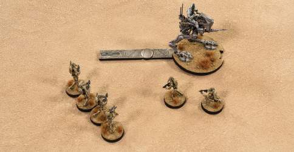
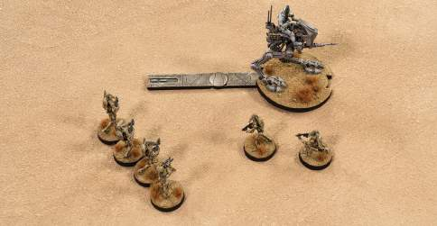
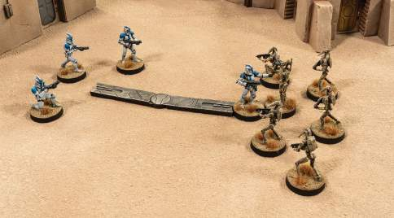
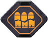

This site attempts to alphabetize all keywords and concepts from the Legion Core Rulebook for quick and easy reference during play. This site is a fan project by Joe Lutovsky and not affiliated with Atomic Mass Games.
QuickGuide last updated: 01.17.2023. Core Rulebook Version 2.5
A

Actions
Actions are how units of miniatures move and fight their way across the battlefield. A unit will typically perform two actions during its activation. The following actions are available to every unit.
- Aim: The unit gains an aim token, which allows it to reroll up to two dice when attacking.
- Attack: The unit attacks with its weapons.
-
Card Action
 : The
unit performs an action listed on its Unit Card or one of its
Upgrade Cards. Card actions have this symbol
. A unit
may perform more than one card action, as long as they are
different. A card action with
requires two actions to perform.
: The
unit performs an action listed on its Unit Card or one of its
Upgrade Cards. Card actions have this symbol
. A unit
may perform more than one card action, as long as they are
different. A card action with
requires two actions to perform.
-
Dodge:
A unit that performs a dodge action gains a dodge token. Units
may spend dodge tokens to cancel
 results during attacks.
results during attacks.
-
Free Card Action
 :
The unit performs an action listed on its Unit Card, one of
its Upgrade Cards, a Command Card, or a Battle Card. Free card
actions do not cost the unit any actions to perform. Free card
actions have this symbol
. A
unit may perform more than one free card action, as long as
they are different. A unit may only perform free actions
during its Perform Actions step and may only perform each
instance of a free action once per activation. Free actions do
not allow a unit to perform a non-move action more than once
during its activation.
:
The unit performs an action listed on its Unit Card, one of
its Upgrade Cards, a Command Card, or a Battle Card. Free card
actions do not cost the unit any actions to perform. Free card
actions have this symbol
. A
unit may perform more than one free card action, as long as
they are different. A unit may only perform free actions
during its Perform Actions step and may only perform each
instance of a free action once per activation. Free actions do
not allow a unit to perform a non-move action more than once
during its activation.
- Move: When a unit performs a move action, it performs a standard move or climb.
- Recover: A unit that performs a recover action removes any number of suppression tokens from the unit and readies any number of the unit’s exhausted Upgrade Cards.
- Standby: The unit gains a standby token, which it can use to perform actions in response to enemy actions. Only trooper units and ground vehicles can perform the standby action.
Related Topics: Activation Phase Aim Attack Card Actions Courage Damaged Dodge Free Actions Free Card Actions Movement Recover Standby Suppression
Activating Units
PARTS OF A UNIT'S ACTIVATION
- Resolve Any Abilities or Effects at Start of Unit Activation
- Rallying
- Perform Actions
- Resolve Any Abilities or Effects at End of Unit Activation
- Assign Order Token
Rallying
Each time a unit activates, it has a chance to rally and remove
suppression tokens. To rally a unit, its controlling player
rolls one white defense die for each suppression token the unit
has. Then its controlling player removes one suppression token
for each
 or
or
 result rolled.
result rolled.
After rallying, if a unit begins its Perform Actions step while suppressed, it performs one fewer action during its Perform Actions step.
If a unit begins its Perform Actions step while panicked, it cannot perform any actions or free actions and drops any claimed objective tokens it may have. Then, if a unit did not perform any actions or free actions due to panic, at the end of the unit’s activation, it removes suppression tokens equal to its courage value.
EXAMPLE: SUPPRESSED AND PANICKED
On Ryan’s turn, he chooses to activate a Clone Trooper unit with two suppression tokens. After resolving any effects at the start of the Clone Trooper unit’s activation, he performs the unit’s Rally step and rolls two white defense dice, one for each suppression token. Unfortunately, he rolls two blanks and does not remove any suppression tokens from the unit. Because the Clone Troopers have a courage value of 1 and have a number of suppression tokens equal to or greater than their courage value, they are still suppressed and must perform one fewer action during the Perform Actions step of their activation.
Additionally, because the Clone Troopers have suppression equal to or greater than double their courage value, they are still panicked as well as suppressed. Therefore, they drop any claimed objective tokens, perform no actions or free actions, and at the end of their activation, they remove suppression tokens equal to their courage value.
COMMANDERS AND CHECKING FOR PANIC
When a unit checks to see if it is panicked, instead of using
its own courage value, it may use the courage value of a
friendly
 unit at range 1–3. For example, a unit with 3 suppression
tokens and courage value 1 would not be panicked if it chooses
to use the courage value of a friendly
unit at range 1–3. For example, a unit with 3 suppression
tokens and courage value 1 would not be panicked if it chooses
to use the courage value of a friendly
 at range 1–3 that has a courage value of 2 or greater.
at range 1–3 that has a courage value of 2 or greater.
NULL COURAGE VALUE
Some units have a null courage value, or “-.” These units can never gain or be assigned suppression tokens and cannot be suppressed or panicked. If a unit gains a null courage value through a special rule, it loses any suppression tokens it has, if any.
If a
 unit has a null courage value, then friendly units at range
1–3 may choose to use that
unit has a null courage value, then friendly units at range
1–3 may choose to use that
 unit's courage value and, therefore, never panic, regardless
of the number of suppression tokens they might have.
unit's courage value and, therefore, never panic, regardless
of the number of suppression tokens they might have.
Perform Actions
During the Perform Actions step, a unit may perform up to 2 of the actions below. A unit may only perform each action once per activation, except for the move action.
- Aim: The unit gains an aim token, which allows it to reroll up to two dice when attacking.
- Attack: The unit attacks with its weapons.
-
Card Action
: The
unit performs an action listed on its Unit Card or one of its
Upgrade Cards. Card actions have this symbol
. A unit
may perform more than one card action, as long as they are
different. A card action with
requires two actions to perform.
-
Dodge:
A unit that performs a dodge action gains a dodge token. Units
may spend dodge tokens to cancel
results during attacks.
-
Free Card Action
:
The unit performs an action listed on its Unit Card, one of
its Upgrade Cards, a Command Card, or a Battle Card. Free card
actions do not cost the unit any actions to perform. Free card
actions have this symbol
. A
unit may perform more than one free card action, as long as
they are different. A unit may only perform free actions
during its Perform Actions step and may only perform each
instance of a free action once per activation. Free actions do
not allow a unit to perform a non-move action more than once
during its activation.
- Move: When a unit performs a move action, it performs a standard move or climb.
- Recover: A unit that performs a recover action removes any number of suppression tokens from the unit and readies any number of the unit’s exhausted Upgrade Cards.
- Standby: The unit gains a standby token, which it can use to perform actions in response to enemy actions. Only trooper units and ground vehicles can perform the standby action.
Place Order Token
Once the active player has resolved any end of unit activation effects, if the unit has a faceup order token, flip it facedown or assign it the drawn order token facedown. The unit’s activation and active player’s turn have ended, and the other player becomes the active player. They take their turn, repeating steps 2–3 of the Activation Phase.
Related Topics: Actions Activation Phase Courage Damaged Free Actions Movement Order Pool Order Tokens Panic Suppression
Activation Phase
During the Activation Phase, players activate their units and may perform actions with them.
Starting with the player who has priority, players take turns activating their units one at a time.
Parts of the Activation Phase
- Resolve Abilities or Effects at Start of Activation Phase
- Choose a Unit to Activate or Pass
-
Activate Unit
- Resolve Any Abilities or Effects at Start of Unit Activation
- Rallying
- Perform Actions
- Resolve Any Abilities or Effects at End of Unit Activation
- Place Order Token
- Resolve Abilities or Effects at End of Activation Phase
Choose a Unit to Activate or Pass
The active player chooses to either activate a friendly unit with a faceup order token or to draw an order token randomly from the order pool and activate a unit matching that order token’s rank. If a player draws an order token with a rank that does not have any corresponding units on the battlefield, remove that token from the game and randomly draw another order token from the order pool. Alternatively, a player may be able to pass.
A player may pass if they have fewer remaining orders than their opponent. To see how many remaining orders a player has, add together the number of faceup order tokens their army has on the battlefield, in that player’s order pool, and on their Command Cards.
When a player chooses to pass, they do not activate a unit and their turn ends. A player can only pass once per round.
Activating a Unit
When a unit is chosen to activate, it first attempts to rally, and then the unit may perform actions. After the unit has completed its actions, flip the unit’s faceup order token facedown or assign it the drawn order token facedown.
See Activating Units
Resolve End of Activation Phase Effects
When all units on the battlefield have been activated, both players’ order pools are empty, and neither player has order tokens on Command Cards, resolve any effects that occur at the end of the Activation Phase.
Once any end of Activation Phase effects have been resolved, the Activation Phase is over and players proceed to the End Phase.
Related Topics: Actions Courage Free Actions Issuing Orders Order Pool Order Tokens Panic Priority Rank
Affiliations
Affiliation Icons
Black Sun

The Pyke Syndicate
Raiders
Rogues
Maul Loyalists
Ewoks
Every Mercenary unit has an affiliation. Their affiliation is where their true loyalty lies. Affiliations represent criminal organizations, syndicates, guilds, gangs, or even a lone bounty hunter just looking out for themselves. A unit’s affiliation is represented by an icon in the upper left corner of their Unit Card, where a unit’s faction icon would normally be.
A unit with an affiliation can be issued orders only by a friendly unit that has the same affiliation.
Related Topics: Battle Forces Factions Mercenaries
AI: Action (Unit Keyword)
During the Perform Actions step of a unit’s activation, a unit with the AI keyword without a faceup order token must perform one of the actions listed as its first action. If a unit cannot perform any of its listed actions as its first action, it is free to perform other actions as normal.
Related Topics: Actions Command Phase Order Tokens
Aid: Affiliation (Unit Keyword)
When a unit with the Aid keyword would gain an aim, dodge, or surge token, another friendly unit of the affiliation or type listed at range 1 and in line of sight may gain that token instead. If it does, the unit with the Aid keyword gains one suppression token.
Related Topics: Actions
Aim
Used when attacking to reroll up to two attack dice.
A unit that performs an aim action gains an aim token which it can use to reroll dice during attacks.
A unit may spend any number of aim tokens while it is attacking to reroll up to two different attack dice for each aim token spent. If a unit has multiple aim tokens, that unit can choose to spend each aim token after determining the results of any previous rerolls granted by aim tokens. A unit may reroll the same die multiple times by spending multiple aim tokens, but each die may only be rerolled once per aim token.
Allies of Convenience (Unit Keyword)
Units with the Allies of Convenience keyword may issue orders to friendly Mercenary units regardless of affiliation. Additionally, when building an army, players may include one extra Mercenary unit in their army regardless of rank if there is at least one unit with the Allies of Convenience keyword, though they cannot take more units of a particular rank than normally allowed.
Related Topics: Actions
Area Terrain
Some terrain features consist of an area of terrain containing multiple terrain elements inside a boundary or footprint, like a forest, craters, ruined buildings, or piles of rubble. The individual elements and their locations inside the area terrain are not relevant, only the boundary.
When determining the size of area terrain, imagine a silhouette beginning at the bottom of the area terrain and extending upwards to the tallest point of the terrain. The volume of this silhouette is all part of the area terrain. It is up to the players to determine the height, the boundaries, special rules, and the type of cover that area terrain provides.
Related Topics: Terrain
Area Weapon

A weapon with a yellow range icon () is an area weapon. When using an area weapon, perform a separate attack against each unit, friendly and enemy, that is in LOS and at the range indicated by the number on the range icon, even if that unit is engaged. Attacks made by area weapons are always ranged attacks.
Area weapons can never be in an attack pool made by a unit and must always be the only weapon in an attack pool.
Related Topics: Arm X: Charge Token attack Attack Pool Charge Tokens Detonate Detonate X: Charge Type Weapons
Arm X: Charge Token (Weapon Keyword)
A unit that is equipped with a card that has the Arm X: Charge Token Type keyword can perform the Arm X action. When a unit performs the Arm X action, the unit places X charge tokens of the specified type and matching its controlling player’s color within range 1 and LOS of its unit leader.
Charge tokens cannot overlap any objective, condition, or other charge tokens and must be placed on a flat surface completely flush with that surface.
Related Topics: Area Weapon Charge Tokens Detonate Detonate X: Charge Type Weapons
Armor
During the Modify Attack Dice step of the attack sequence, if
the defending unit has the Armor keyword, the defending player
may cancel all hit
 results in the attack roll, removing those dice from the attack
pool.
results in the attack roll, removing those dice from the attack
pool.
Related Topics: Attack Cancel Impact X Weak Point X: Rear/Sides
Armor X (Unit Keyword)
During the Modify Attack Dice step of the attack sequence, if
the defending unit has the Armor X keyword, the defending player
may cancel up to X hit
results, removing those dice from the attack pool.
Related Topics: Attack Cancel Impact X Weak Point X: Rear/Sides
Arsenal X (Unit Keyword)
When choosing weapons during the Choose Weapons and Gather Dice step, each miniature in the unit that has the Arsenal X keyword can choose up to X weapons to contribute to the attack pool.
Related Topics: Attack Attack Pool Weapons
Ataru Mastery (Unit Keyword)
A unit that has the Ataru Mastery keyword can perform up to two
attack actions. After it performs an attack, it gains one dodge
token after the effect is resolved. After it defends, it gains
one aim token after the effect is resolved. While defending
against a ranged attack, if it spends a dodge token during the
Apply Dodge and Cover step, the attacker suffers one wound for
each defense surge
 result rolled by the defender during the Roll Defense Dice step.
result rolled by the defender during the Roll Defense Dice step.
It is possible for the attacking unit to be defeated by a defending unit using the Ataru Mastery keyword. If the Ataru Mastery keyword causes the attacking unit to be defeated, the attack continues, and the defender can still suffer wounds.
If the Ataru Mastery keyword is used against an attack that includes a weapon with the Immune: Deflect keyword, Ataru Mastery cannot cause wounds to the attacking unit.
At (Range)
Some abilities require two objects to be at, within, or beyond a certain distance from each other.
An object is at a range of another object if any portion of it is inside that range as measured by the range tool. For a unit to be at a specified range, only one miniature in the unit must be at the given range. An object is always at any range of itself.
Related Topics: Attack Beyond (Range) Premeasuring Range Weapons Within (Range)
Attack
Attacks are usually made by units as part of an attack action but can be made as part of another rule. A unit may make multiple attacks a turn but can only perform one attack action per turn, regardless of whether the attack action is a free action.
Attack Timing
- Declare Defender
-
Form Attack Pool
- Determine Eligible Miniatures
- Choose Weapons and Gather Dice
- Declare Additional Defender
-
Roll Attack Dice
- Roll Dice
- Reroll Dice
- Convert Attack Surges
-
Apply Dodge and Cover
- Apply Dodge
- Determine Number of Obscured Miniatures
- Determine Cover
- Apply Cover
- Modify Attack Dice
-
Roll Defense Dice
- Roll Dice
- Reroll Dice
- Convert Defense Surges
- Modify Defense Dice
- Compare Results
- Assign Suppression Token to Defender
- Choose Additional Attack Pool
Line of Sight
Line of sight (LOS) is used to see if one miniature can “see” another miniature.
See Line of Sight
Weapons
Each unit is equipped with weapons that miniatures may contribute to attack pools.
See Weapons
Declare Defender
The first stage in the attack sequence is choosing an enemy unit to attack. The attacking player declares they are performing an attack action with their unit against an enemy unit, which becomes the defending unit. Then, measuring from the attacking unit’s unit leader, the attacking player checks to see that the defending unit is at range of at least one of the attacking unit’s weapons and has at least one miniature in LOS to the attacking unit leader. If either of these conditions cannot be met, the attack or attack action cannot be made and is wasted.

Sarah has declared an attack action with her unit of Battle Droids. The first step of the attack sequence is to declare a defender. Measuring from the Battle Droids’ unit leader, Sarah chooses an enemy unit that is in range of at least one of the Battle Droid’s weapons and that has at least one miniature in LOS. In this case, since the Battle Droids’ weapons are range 1–3, Sarah must choose an enemy unit at range 1–3 of the Battle Droids’ unit leader that is also in LOS. Since the Battle Droid unit leader has LOS to both Obi-Wan Kenobi and the Clone Troopers, and both are in range of at least one of the Battle Droids’ weapons, Sarah can choose either as the defending unit.
Form Attack Pool
The attack pool consists of all the attack dice the attacking unit rolls against the defending unit. To form the attack pool, the attacking player performs the following steps:
- Determine Eligible Miniatures: A miniature in the attacking unit is eligible to add dice to the attack pool if that miniature has LOS to any miniature in the defending unit.
- Choose Weapons and Gather Dice: For each eligible miniature, the attacking player may choose up to one weapon available to the miniature to add to the attack pool, along with any weapon keywords that weapon may have.
- A miniature must meet any requirements to choose a weapon.
- A miniature may only add a weapon to an attack pool once throughout the entire attack sequence.
- Weapons provided by a or upgrade or Command Card can only be used by the miniature indicated on the card.
- A weapon cannot be chosen if the defending unit is at a range less than the weapon’s minimum range or greater than the weapon’s maximum range, as measured from the attacking unit leader to the closest miniature in the defending unit.
- An attack pool cannot contain both melee and ranged weapons.
- An attack pool can consist of different weapons.
- All weapons with an identical name must go in the same attack pool and cannot be split among multiple attack pools.
- An attack pool must consist of at least one weapon.
After the attacking player is done forming the attack pool, they gather all the dice for that attack pool and place them on the battlefield next to the defending unit.
Example: Forming Attack Pools

Summer has declared an attack with her unit of Battle Droids and ensured that the defending unit of Clone Troopers are in range and LOS. Next, Summer determines eligible miniatures by checking LOS from each individual Battle Droid in the unit. A miniature is eligible to contribute dice to an attack pool if it has LOS to any miniature in the defending unit. Summer determines that all but one of Battle Droids are eligible miniatures. Then, for each eligible miniature, Summer chooses one of the weapons available to the unit for that miniature to contribute to the attack pool. A miniature must meet all requirements, if any, to choose a particular weapon. Finally, Summer cannot choose any weapons if the Clone Troopers would be closer than the weapon’s minimum range or beyond the weapon’s maximum range.
Since the Clone Troopers are at range 2 and Summer has four eligible Battle Droids, she decides to add four range 1–3 blaster rifles to the attack pool. She gathers the dice for these weapons and places them together on the battlefield next to the defending unit.
Attacking in Melee
Miniatures that are not in base contact with an enemy miniature can still contribute dice to an attack pool with a melee weapon if they belong to a unit in melee. A melee weapon cannot be in the same attack pool as a non-melee weapon.
Declare Additional Defender
If there are any remaining weapons available to a unit that have not been added to an attack pool, and there are eligible miniatures that have not yet added a weapon to an attack pool, the attacking player may repeat steps 1–2 of the attack sequence, forming a new attack pool targeting a different defending enemy unit than any other attack pool. Weapons cannot be added to an attack pool if a weapon with the same name has already been added to a different attack pool.
Example: Declare Additional Defender
In the previous example, Sarah put all the Clone Troopers’ weapons into the same attack pool. If she wishes, she may leave the heavy weapon out of the attack pool and instead form a pool with only the four blaster rifles, leaving an eligible miniature that has not contributed a weapon to an attack pool. After she has formed the first attack pool, she may then choose to declare a new defender and repeat steps 1–2 of the attack sequence, forming a new attack pool with the heavy weapon against a different defending unit.
Roll Attack dice
- Roll Dice: The attacking player rolls the dice in the attack pool.
- Reroll Dice: The attacking player can resolve any abilities or spend any aim tokens that allow the attacking unit to reroll attack dice. A unit may spend any number of aim tokens while it is attacking to reroll up to two different attack dice for each aim token spent. If a unit has multiple aim tokens, that unit can choose to spend each aim token after determining the results of any previous rerolls granted by aim tokens. A unit may reroll the same die multiple times by spending multiple aim tokens, but each die may only be rerolled once per aim token.
-
Convert Attack Surges: The attacking player
changes any
 results to the result indicated on the Unit Card. Additonally,
the attacking player may spend any number of surge tokens on
the attacking unit to convert one
result to a
result for every surge token spent. If no result is indicated,
turn the die to a blank result.
results to the result indicated on the Unit Card. Additonally,
the attacking player may spend any number of surge tokens on
the attacking unit to convert one
result to a
result for every surge token spent. If no result is indicated,
turn the die to a blank result.
Example: Roll Attack Dice
Simone has an attacking unit of Snowtroopers with an attack pool
that consists of five white dice. She rolls the dice and gets
one
 , one
, one
, and two blank results. Having rolled the dice, Simone then
resolves any abilities that let her reroll dice. The
Snowtroopers do not have any reroll abilities, but they do have
an aim token. Simone chooses to use the aim token to reroll up
to two dice of her choice. Both dice must be rerolled at the
same time; she cannot reroll one and then reroll it again with
the same aim token. Simone chooses to reroll both blank dice,
getting one
and one blank result, bringing the final dice results to one
, one
, two
, and one blank result. Next, she converts attack surges.
Since the Snowtroopers have
:
on the surge chart on their Unit Card, Simone changes the two
results to
results. If the Snowtroopers did not have
:, she would have turned the
results to blank results instead. The final dice results for the
attack are therefore one
, three
, and one blank result.
, one
, one
, and two blank results. Having rolled the dice, Simone then
resolves any abilities that let her reroll dice. The
Snowtroopers do not have any reroll abilities, but they do have
an aim token. Simone chooses to use the aim token to reroll up
to two dice of her choice. Both dice must be rerolled at the
same time; she cannot reroll one and then reroll it again with
the same aim token. Simone chooses to reroll both blank dice,
getting one
and one blank result, bringing the final dice results to one
, one
, two
, and one blank result. Next, she converts attack surges.
Since the Snowtroopers have
:
on the surge chart on their Unit Card, Simone changes the two
results to
results. If the Snowtroopers did not have
:, she would have turned the
results to blank results instead. The final dice results for the
attack are therefore one
, three
, and one blank result.
Apply Dodge and Cover
-
Apply Dodge: If the defending unit has one or
more dodge tokens, the defending player may spend any number
of them to cancel one
result in the attack pool for each token spent, removing that
die from the pool. If the attack is a ranged attack, the
defending unit may benefit from cover. If the attack is not a
ranged attack, players can skip to the Modify Attack Dice
step. After spending any dodge tokens, the defending player
applies cover to cancel any remaining hit results. To apply
cover, the players follow the below steps.
- Determine Number of Obscured Miniatures: The attacking player checks LOS from the attacking unit leader’s silhouette to each miniature in the defending unit. If LOS to any part of the defending miniature’s silhouette is blocked by terrain other than terrain in base contact with the attacking unit leader and a part of the silhouette is still visible, the defending miniature is obscured. If LOS to a miniature is completely blocked, the miniature is obscured. Repeat this process for every miniature in the defending unit.
-
Determine Cover: If at least half of the
miniatures in the defending unit are obscured, the defending
unit has cover. The type of cover is determined by whatever is
obscuring the defending unit, providing either heavy or light
cover based on the players’ discussion of terrain before the
game. If miniatures in the defending unit are obscured by
terrain that provides light cover and some by terrain that
provides heavy cover, if more than half of the obscured
miniatures are obscured by terrain that provides heavy cover,
the defending unit has heavy cover. Otherwise, the unit has
light cover.
A unit with one or more suppression tokens improves its cover by one: a unit with no cover gains light cover, and a unit in light cover gains heavy cover. -
Cancel Results: If the defending unit has
light cover, it cancels one
result in the attack pool. If the defending unit has heavy
cover, it cancels two
results in the attack pool.
Example: Applying Cover
Summer’s Clone Troopers are attacking Brian’s Battle Droids with
a ranged attack and have rolled one
and three
results. Brian’s Battle Droids didn’t have any dodge tokens, so
the next step is to apply cover. To do so, Summer checks LOS
from the Clone Troopers’ unit leader to each miniature in the
Battle Droid unit. If LOS to any part of a Battle Droid’s
silhouette is blocked by terrain other than terrain in base
contact with the Clone Troopers’ unit leader, that Battle Droid
is obscured. Summer checks LOS and determines that five Battle
Droids are obscured.
Because at least half of the Battle Droids are obscured, the Battle Droids have cover. Before the game, Brian and Summer determined that the building provide heavy cover and the crates provide light cover. Because over half of the Battle Droids are obscured by heavy cover, the Battle Droids have heavy cover.
Finally, because the Battle Droids have heavy cover, Brian
cancels two
results in Summer’s dice roll, leaving the dice results at one
and one
.
Modify Attack Dice
The attacking player can resolve any effects that modify the attacking unit’s attack dice. Then the defending player can resolve any effects that modify the attacking unit’s attack dice.
Roll Defense Dice
The defending player rolls defense dice by following the below steps.
-
Roll Defense Dice: For every remaining
and
result remaining in the attack pool, the defender rolls one
defense die, using the die pictured on the defending Unit
Card.
- Reroll Defense Dice: The defending player can resolve any effects that allow the defending unit to reroll defense dice.
-
Convert Defense Surges: The defending player
changes any
results to the result indicated on the Unit Card. If no result
is indicated, turn the die to a blank result. The defending
player may spend any number of surge tokens on the defending
unit to convert one
result to a
 result for every surge token spent.
result for every surge token spent.
Example: Rolling Defense Dice
Summer has attacked Brian’s Battle Droids and has a dice pool of
one
and one
result after applying dodge and cover. Since Battle Droids have
white defense dice, Brian rolls two white defense dice, one for
each
and
result remaining. He rolls one
and one
result.
After rolling defense dice, Brian may use any abilities that
allow him to reroll defense dice. The Battle Droids do not have
such an ability, so he proceeds to convert defense surges. Since
Battle Droids do not have
:
on their Unit Card, he changes the
he rolled to a blank, resulting in a final roll of one
and one blank result.
Modify Defense Dice
The defending player can resolve any effects that modify the defending unit’s defense dice. Then the attacking player may resolve any effects that modify the defending unit’s defense dice.
Compare Results
The attacking player counts the number of
and
results. Then the defending player counts the number of
results and subtracts the total number of
results from the total number of
and
results. The defending unit suffers a number of wounds equal to
the difference.
Example: Comparing Results
Summer has rolled one
and one
result after applying cover in her attack against Brian’s Battle
Droids, and he has rolled one
and one blank result in defense. Summer counts her
and
results for a total of two. Brian counts his
results for a total of one. The players subtract Brian’s total
from Summer’s total for 2-1=1. Since the defending unit suffers
a number of wounds equal to the difference in the attacking and
defending results, Brian’s Battle Droids suffer one wound.
Suffering Wounds and Defeating Miniatures
When a player’s unit suffers wounds, that player chooses a miniature from that unit and assigns wound tokens to it until either all wounds have been suffered or the miniature is defeated.
A miniature is defeated when it has a number of wound tokens assigned to it equal to its wound threshold. If there are unassigned wounds remaining after a miniature has been defeated, the player chooses another miniature from the same unit and repeats the process until either all wounds have been assigned or all miniatures in the unit have been defeated. When a unit suffers wounds from an attack, if the attacker has LOS to only some of the miniatures in the defending unit, the defending unit cannot suffer wounds greater than the total wound threshold of miniatures that are in LOS.
A unit leader cannot be assigned wounds unless it is the only miniature in the unit.
A miniature or unit with at least one wound token is wounded. When assigning wound tokens, the wounded miniature with the most wound tokens must be chosen before any others when assigning wounds and must be assigned wounds until it is defeated. If more than one miniature has the same number of wound tokens assigned, choose one of those miniatures to assign wounds to.
When a miniature is defeated, remove it from the battlefield. If a unit leader is defeated and there are still undefeated miniatures in the unit, the unit’s controlling player must immediately choose another miniature in that unit to become the unit leader, replacing that miniature with the unit leader miniature.
When all of the miniatures in a unit are defeated, the unit is defeated. Remove all order tokens for that unit from the battlefield.
Removing Miniatures in Melee
When miniatures in melee are defeated, space may be created for the attacking miniatures to advance. After the attack is resolved, starting with the attacking player, each player must place any friendly miniatures that are no longer in base contact with miniatures in the enemy unit into base contact with the enemy unit. The rules of cohesion must still be followed during these placements.
If, for any reason, miniatures cannot be placed back into base contact with an enemy miniature and none of the miniatures belonging to that unit are in base contact with an enemy miniature, those miniatures do not move and that unit is no longer in melee.
Effects that Deal or Assign Wounds
Some effects deal or assign wounds without going through the attack sequence. These effects are not attacks, so no defense dice are rolled, nor are any suppression tokens assigned. The player that controls the unit suffering wounds assigns the wounds as normal.
Some effects explicitly state that a certain miniature in a unit suffers wounds. In this case, the player who controls the effect may assign any wounds suffered in this way, ignoring the normal rules for assigning wounds.
Example: Assigning Wounds and Defeating Miniatures
After comparing results, Dallas’ unit of five Clone Troopers has suffered three wounds from an attack. He then assigns one of the wounds to a miniature in the unit. Since all the miniatures in the Clone Trooper unit have a wound threshold of 1, the miniature that Dallas assigned a wound to is defeated. Since there are two unassigned wounds remaining, Dallas chooses another miniature from the same unit and repeats the process until either all wounds have been suffered or all miniatures in the unit have been defeated. Since each Clone Trooper only has a wound threshold of 1 and the unit suffered three wounds, this means that three Clone Troopers are defeated, leaving two Clone Troopers remaining.
After comparing results, Chris’ unit of three unwounded Wookiees has suffered four wounds. He then assigns one of the wounds to a miniature in the unit. Because Wookiees have a wound threshold of 3, the Wookiee is not defeated when it is assigned the wound, and Chris has three more wounds left to assign. However, because the Wookiee has at least one wound token assigned to it, it is wounded, and Chris MUST choose to assign it any additional wound tokens since it has more wound tokens assigned to it than any other miniature in the unit. Chris is forced to assign the next two wounds to the Wookiee until it reaches its wound threshold of 3 and is defeated, leaving one wound left to be assigned. Chris must choose a non-unit leader Wookiee to assign the wound to. In the future, because the wounded Wookiee has more wound tokens than the other, Chris must assign wounds to it first, and must continue to do so until it is defeated.
Assign Suppression Token to Defender
After resolving steps 1–9 of the attack sequence, if there were
any
or
results in the attack pool during the Roll Attack Dice step of
the attack sequence and the attack was a ranged attack, the
defending unit gains one suppression token.
Choose Additional Attack Pool
After resolving steps 1–10 of the attack sequence, if the attacking unit still has attack pools to resolve, the attacking player chooses another attack pool to resolve against a defending unit, performing an attack against it by repeating steps 4–11 of the attack sequence.
Once all of an attacking unit’s attack pools have been resolved, the attack action ends.
Related Topics: Aim Attack Pool cancel Cover Dice Dodge Firing Arcs Melee Melee Weapon Premeasuring Range Ranged Weapon Surges Suppression Unit Leader Weapons Wounds
Attack Pool
The attack pool consists of all the attack dice the attacking unit rolls against the defending unit. To form the attack pool, the attacking player performs the following steps:
- Determine Eligible Miniatures: A miniature in the attacking unit is eligible to add dice to the attack pool if that miniature has LOS to any miniature in the defending unit.
- Choose Weapons and Gather Dice: For each eligible miniature, the attacking player may choose up to one weapon available to the miniature to add to the attack pool, along with any weapon keywords that weapon may have.
- A miniature must meet any requirements to choose a weapon.
- A miniature may only add a weapon to an attack pool once throughout the entire attack sequence.
- Weapons provided by a or upgrade or Command Card can only be used by the miniature indicated on the card.
- A weapon cannot be chosen if the defending unit is at a range less than the weapon’s minimum range or greater than the weapon’s maximum range, as measured from the attacking unit leader to the closest miniature in the defending unit.
- An attack pool cannot contain both melee and ranged weapons.
- An attack pool can consist of different weapons.
- All weapons with an identical name must go in the same attack pool and cannot be split among multiple attack pools.
- An attack pool must consist of at least one weapon.
After the attacking player is done forming the attack pool, they gather all the dice for that attack pool and place them on the battlefield next to the defending unit.
Example: Forming Attack Pools
Summer has declared an attack with her unit of Battle Droids and ensured that the defending unit of Clone Troopers are in range and LOS. Next, Summer determines eligible miniatures by checking LOS from each individual Battle Droid in the unit. A miniature is eligible to contribute dice to an attack pool if it has LOS to any miniature in the defending unit. Summer determines that all but one of Battle Droids are eligible miniatures. Then, for each eligible miniature, Summer chooses one of the weapons available to the unit for that miniature to contribute to the attack pool. A miniature must meet all requirements, if any, to choose a particular weapon. Finally, Summer cannot choose any weapons if the Clone Troopers would be closer than the weapon’s minimum range or beyond the weapon’s maximum range.
Since the Clone Troopers are at range 2 and Summer has four eligible Battle Droids, she decides to add four range 1–3 blaster rifles to the attack pool. She gathers the dice for these weapons and places them together on the battlefield next to the defending unit.
Related Topics: Attack Exhaust Firing Arcs Keywords Melee Weapon Premeasuring Range Ranged Weapon Weapons
Authoritative (Unit Keyword)
Once per Command Phase, when a unit with the Authoritative keyword would be issued an order, that unit may instead issue an order to a friendly unit at range 1–2.
Related Topics: Commander Issuing Orders Order Tokens
B
Bane Tokens
Bane Token (Back)
Cad Bane has a set of three unique Bane tokens that he can place on the battlefield. Bane tokens are double-sided, with a uniform back and three different images on the front, each linked to a unique effect.
Bane tokens must be placed facedown on the battlefield and cannot overlap objective or condition tokens. Bane tokens are enemy effects. Each player may only have one copy of each different Bane token on the battlefield at the same time.
When an enemy miniature moves, deploys, or is placed at range 1 of an enemy Bane token, if that miniature has LOS to the token, it is revealed. Miniatures can move through but not overlap Bane tokens. When a Bane token is revealed, it has one of the following effects:

Here I am
Smoke and Mirrors

Kablamo
Here I Am: If Cad Bane is not on the battlefield and is not defeated, his Here I Am token is replaced by his miniature. Then, Cad Bane issues himself an order.
- If Cad Bane is on the battlefield, his Here I Am token is replaced by his miniature. Any tokens assigned to Cad Bane remain assigned to him.
- If Cad Bane is defeated, the token is removed.
- At the start of each round, starting with the blue player, a player may reveal a friendly Here I Am token and resolve it.
Smoke and Mirrors: The token is removed.
Kablamo!: The token detonates using the weapon profile on Cad Bane’s I Make the Rules Now Command Card, then the token is removed.
Related Topics: Defining the Battlefield Deployment
Barricades
Barricades are a specific type of scatter terrain found in some Star Wars: Legion Core Sets and in their own expansion pack. Barricades are difficult terrain for trooper units and provide non-creature trooper units with heavy cover.

Barricades cannot be placed overlapping objective or condition tokens and cannot have objective or condition tokens placed on them. A trooper miniature can never partially overlap a barricade at any time.
Related Topics: Cover Creature Trooper Difficult Terrain Scatter Terrain Terrain
Base
Each miniature in Star Wars: Legion is modeled on a base. A unit’s base depends on its unit type: troopers, clone troopers, droid troopers, and Wookiee troopers are on small bases. Everything else is on notched bases of various sizes.
Related Topics: Base Contact Engaged Melee Miniature Movement Notch Troopers Vehicles
Base Contact
Many rules in Star Wars: Legion use the term “base contact," which means that the miniature must be touching whatever the rule is referencing. This includes another miniature's base, a piece of terrain, or a token.
Miniatures cannot move into base contact with miniatures from
enemy units unless the unit leader has a melee weapon (). If the unit leader does, the unit leader can perform a move
into base contact with an enemy miniature to start a melee. For
more information on melee combat, see
Melee.
Because a miniature’s base can be placed on top of uneven terrain, there are situations in which another miniature cannot be placed into physical base contact with the first miniature because of a difference in elevation between the two bases. In these situations, if the following two conditions are met, those miniatures are treated as if they are in base contact: when viewed from above, there is no space between the two miniature’s bases, such that if they were not on differing elevations or were both flat on the battlefield, their bases would be touching, and the vertical distance between the two bases is no greater than the height of the lower miniature’s silhouette. For more information on silhouettes, see Line of Sight.
Related Topics: base Climb Cover Engaged Objective Tokens Melee Melee Weapon
Battle Cards
Battle Cards form the Battle Deck and are used in Setup, where players work together to build the mission they use for that game. Battle Cards are divided into three categories: Objective (Blue), Deployment (Red), and Condition (Green).
Objective Cards list the objectives the players are trying to accomplish, and the Victory conditions used to determine which player wins the game.
Deployment Cards show a map of the battlefield and the areas in which players may deploy their armies during Setup, known as deployment zones.
Condition Cards have a variety of different effects that impact the battle and how the game is played, from limited visibility to dangerous minefields!
Related Topics: Condition Cards Condition Tokens Defining the Battlefield Deployment Objective Cards Objective Tokens
Battlefield
The table or surface being played on is the battlefield.
Related Topics: Defining the Battlefield Deployment Leaving the Battlefield
Battle Forces
In Star Wars: Legion, Battle Forces represent groups of units that fought side by side in the Star Wars galaxy. These forces are themed around unique sub-groups and can range from a ragtag group of Mercenaries to the main invasion force of the Empire.
Battle Forces provide players with an alternative way to build and field an army. Each Battle Force has its own list of specific units that it is allowed to field, its own rank requirements for both standard and skirmish armies, and its own special rules, which may affect how that Battle Force is built, set up, or plays.
Related Topics: Factions Affiliations
Beam X (Weapon Keyword)
During the Declare Additional Defender step, if a weapon with the Beam X keyword is in a unit’s attack pool, that unit may declare up to X additional attacks forming attack pools using only the weapon with the Beam X keyword, even though the weapon has already been added to an attack pool. These additional attacks do not generate further attacks.
Each additional attack must be against a different defending unit that is at range 1 of the last defending unit declared. These additional attacks must be in LOS of the attacking unit but may be beyond the maximum range of the weapon with the Beam X keyword.
Other friendly units may not use the Fire Support keyword during the additional attacks made with Beam X.
Related Topics: Attack Fire Support Range
Beyond (Range)
Some abilities require two objects to be at, within, or beyond a certain distance from each other.
An object is beyond a range of another object if it is entirely outside that range as measured by the range tool. For a unit to be beyond a range, all miniatures in the unit must be beyond the given range.
Related Topics: Attack At (Range) Premeasuring Range Within (Range)
Blast
During the Apply Cover step, a defending unit cannot use light
or heavy cover to cancel hit
results produced by an attack pool that contains dice added by a
weapon with the Blast keyword.
Related Topics: Attack Attack Pool Cover
Bolster X (Unit Keyword)
As a card action, a unit with the Bolster X keyword can choose up to X friendly units at range 1 to each gain one surge token.
Related Topics: Actions Card Actions Surge Tokens
Bomb Carts
A bomb cart miniature is not a unit and cannot gain tokens, suffer wounds, or be targeted by any effects that target units.
A bomb cart has a silhouette that rises from the base of the bomb cart miniature up to the handles of the bomb cart. Ignore anything placed on the bomb cart when determining its silhouette. A bomb cart miniature that obscures non-creature troopers with its silhouette provides heavy cover. A bomb cart never provides cover to creature troopers or vehicles. A bomb cart miniature never blocks LOS.

A bomb cart miniature ignores the effects of difficult terrain and can perform partial moves. A bomb cart cannot move through impassable terrain.
A bomb cart miniature can move through all miniatures, including other bomb carts but cannot end its movement overlapping the base of another miniature that cannot be displaced. A bomb cart miniature’s final position can overlap a trooper miniature’s base if that trooper miniature can be displaced, displacing that trooper miniature. A bomb cart can reverse.
All units can move through bomb cart miniatures but cannot end their movement overlapping a bomb cart miniature’s base.
Related Topics: Displacement movement Objective Cards
Bounty (Unit Keyword)
After setup, a unit with the Bounty keyword chooses an enemy
 or
or
 unit and marks that unit with a victory token placed on the
enemy Unit Card. After a unit with the Bounty keyword defeats an
enemy unit marked by a victory token from the Bounty keyword
with an attack or effect, move the victory token to the Unit
Card of the unit with the Bounty keyword.
unit and marks that unit with a victory token placed on the
enemy Unit Card. After a unit with the Bounty keyword defeats an
enemy unit marked by a victory token from the Bounty keyword
with an attack or effect, move the victory token to the Unit
Card of the unit with the Bounty keyword.
At the end of the game, for each unit on the battlefield that a player controls that has the Bounty keyword and has at least one victory token on its Unit Card due to defeating an enemy unit, that player gains one victory token.
Related Topics: Defeated Victory Tokens Winning the Game
C
Cache (Unit Keyword)
During Setup, a unit with an equipped Upgrade Card that has the Cache keyword places the listed token(s) on the card with the Cache keyword. The unit may spend those tokens.
Related Topics: Actions
Calculate Odds (Unit Keyword)
As a card action, a unit with the Calculate Odds keyword can choose a friendly trooper unit at range 1 and in LOS to gain one aim token, one dodge token, and one suppression token.
Related Topics: Actions Aim Card Actions Dodge Suppression
Card Actions
The unit performs an action listed on its Unit Card or one of
its Upgrade Cards. Card actions have this symbol
. A unit
may perform more than one card action, as long as they are
different. A card action with
requires two actions to perform.
Related Topics: Abilities Actions Activating Units Exhaust Free Actions Free Card Actions Keywords Upgrade Cards
Charge (Unit Keyword)
After a unit that has the Charge keyword performs a move action that brings it into base contact with an enemy miniature to start a melee, it may perform a free attack action against that unit using only melee weapons.
Related Topics: Base Contact Free Actions Melee Movement
Charge Tokens

Charge tokens cannot overlap any objective, condition, or other charge tokens and must be placed on a flat surface completely flush with that surface.
Related Topics: Area Weapon Arm X: Charge Token Detonate Detonate X: Charge Type Weapons
Claim
Many Objective Cards use the
Claim action.
objective tokens used in a game with these objective Battle
Cards may be claimed. A trooper unit must have its unit leader
in base contact with an unclaimed objective token in order to
use the
Claim action. When a
unit claims an objective token, flip the objective token to its
claimed side and place it back on the battlefield in the same
position.
The token will remain in base contact with the unit leader as it moves around the battlefield. After the unit performs any movement, that unit’s controlling player may pick up any claimed objective tokens and place them in base contact with the unit leader.
When a unit leader with a claimed objective token begins its Perform Action step while panicked, or before removing the unit leader when it is defeated, flip any claimed objective tokens to their unclaimed side, then place them back on the battlefield in the same position. These tokens may be claimed again as normal.
See: Objective Token
Climb
Sometimes units maneuver onto tall pieces of obstacle terrain. This is accomplished by performing a climb. Miniatures on notched bases may not climb.
To perform a climb, a unit performs a move as normal, except that it must use the speed-1 tool. A miniature may move a vertical distance up to height 1 when making a climb and may place the movement tool overlapping obstacle terrain that is taller than the height of the moving unit’s silhouette.
Example: Performing a Climb

Sarah wishes to move her Clone Trooper unit on top of the building. She measures the height of the building and determines that it is taller than the Clone Trooper's silhouette, meaning that the Clone Troopers cannot reach the top by performing a standard move. Instead, Sarah performs a climb with the Clone Troopers.
The Clone Troopers move as normal, except they must use the speed-1 movement tool when climbing, and they may move up to a vertical distance of height 1 when making a climb.
Related Topics: Base Contact Cohesion Dice Height Movement Troopers Unit Leader Vehicles Wounds
Clone Trooper
While attacking or defending, a clone trooper unit may spend one aim, dodge, or surge token belonging to another friendly clone trooper unit at range 1 and in LOS as if the attacking or defending unit had that token.
Related Topics: Troopers
Cohesion
A unit is in cohesion if all miniatures in that unit are at a speed-1 move of the unit leader and within a vertical distance equal to the height of the unit leader’s silhouette. For units on notched bases, this move may be measured from any part of the miniature's base. For more information on silhouettes, see Line of Sight. When measuring cohesion, the speed-1 movement tool may not overlap a piece of impassable terrain. If a unit is not in cohesion for whatever reason, its next action must be a move action that ends with all miniatures in cohesion.
Related Topics: Climb Displacement Height Movement Unit Leader
Command Cards
Command Cards form a player’s command hand and are used in the Command Phase to determine player priority, issue orders to units, and grant powerful game effects.
Building a Command Hand
Each player prepares a command hand of exactly seven Command Cards. A player must include two 1 pip cards, two 2 pip cards, and two 3 pip cards, with no duplicates. Additionally, players must always include the 4 pip card “Standing Orders."
Some Command Cards require certain units. The required unit must be in a player’s army for these Command Cards to be included in a command hand. Occasionally, a Command Card requires a player to be fielding an army from a certain faction or Battle Force to be included in the command hand. These restrictions are printed on the Command Card.
SECRET INFORMATION
The contents of a player’s command hand are secret information and are never shared with their opponent. However, the number of cards in a player’s command hand is not secret, nor is the contents of a player's discard pile. Non-secret information must be freely shared between players at all times.
Related Topics: Command Phase Commander Issuing Orders Order Tokens Premeasuring Priority Range
Command Phase
During the Command Phase, players select a Command Card from their command hand, reveal and resolve their Command Cards, determine priority, issue orders, and create the order pool.
Parts of the Command Phase
-
Select and Play Command Cards
- Resolve Command Cards
- Determine Priority
- Nominate Commanders and Issue Orders
- Create the Order Pool
Select and Play Command Cards
Each player secretly chooses a Command Card to play from their
hand and places it facedown on the battlefield. If a player does
not have at least one
 or
or
 unit on the battlefield, they may not play any Command Cards
this round.
unit on the battlefield, they may not play any Command Cards
this round.
Some units have several unique Command Cards, which may only be played if that unit is included in a player’s army and is not defeated.
Resolve Command Card Effects
After both players have played a Command Card facedown, they then reveal their Command Cards by flipping them faceup and proceed to resolve the effects of the Command Cards. Fully resolve the effect of each Command Card before moving to the next Command Card. If both players have an effect that occurs at the same time, the blue player always resolves their Command Card effect first.
Determine Priority
Once players have resolved all relevant Command Card effects, compare the number of pips on the Command Cards that were played this round. The player whose card has the least number of pips has priority for the round.
If both players reveal Command Cards with the same number of
pips, one player rolls a red defense die. If the result is a
, that player has priority. On any other result, the other
player has priority.
If one player was unable to play a Command Card due to not
having a
 or
or
 unit, the other player automatically has priority. If neither
player played a Command Card, one player rolls a red defense die
to determine priority.
unit, the other player automatically has priority. If neither
player played a Command Card, one player rolls a red defense die
to determine priority.
Nominate Commanders and Issue Orders
After determining priority, players nominate commanders and issue orders to their units.
If the played Command Card corresponds to a specific unit, that
unit must be nominated as the commander. Otherwise, players may
nominate any one
 unit to be their commander.
unit to be their commander.
Once all players have nominated a commander, they issue orders to their units, starting with the player who has priority. The number of orders and the units they can be issued to is listed on each Command Card. For a commander to issue an order to a unit, a unit must:
- Be at range 1–3 of the nominated commander (the nominated commander is always at range 1 of itself).
- The unit cannot have already received an order during the current Command Phase.
- The unit must match the type (if any) listed on the Command Card.
When a unit is issued an order, take an order token that corresponds to the unit’s rank and place it faceup on the battlefield next to the unit. If a commander cannot issue all the orders allowed by the Command Card, any excess orders are lost. Once both players have issued orders, they then proceed to create the order pool.
Other Ways to Issue Orders
Some rules or abilities allow units to be issued orders from sources other than the nominated commander. These units do not have to follow the above criteria when they are issued orders in this way, instead following the rules of the effect granting that order.
Example: Issuing Orders
Nick has played the Command Card Push, which lets him issue orders to two units. Nick nominates Obi-Wan Kenobi as his commander. Nick can then issue the two orders from Push to two units at command range of his chosen commander, which in this case is at range 1–3 of Obi-Wan Kenobi. He chooses to issue an order to the Clone Trooper unit. For the second order, he cannot choose the Clone Trooper unit again, as it already has a faceup order token. The Infantry Support Platform is outside of Obi- Wan Kenobi’s command range, so it cannot be issued an order. Choosing between the AT-RT and Obi-Wan Kenobi, Nick decides to issue an order to Obi-Wan Kenobi, who is in command range because a miniature is always at range 1 of itself.
Create the Order Pool
After issuing orders, each player creates their order pool by taking one order token that matches the rank of each undefeated unit that was not issued an order and shuffling those order tokens together.
Once players have created their order pools, the Command Phase is over, and the Activation Phase begins.
Related Topics: Command Cards Commander Order Tokens Premeasuring Priority Range
Compel (Unit Keyword)
After another trooper unit at range 1–2 of a friendly unit with the Compel keyword performs its Rally step and is suppressed but not panicked, at the beginning of its Perform Action step, it may gain one suppression token to perform a free move action.
Related Topics: Courage Movement Supression Panic
Compulsory Move
A compulsory move is a free move action. To perform a compulsory move, the unit performs a full move at its maximum speed. If it cannot do so, or if a full move would cause any part of the unit leader’s base to be outside the battlefield, it can perform a partial move instead, ending its movement as far along the movement template as possible.
Related Topics: Displacement Movement Speeder X
Condition Cards
Condition Cards have a variety of different effects that impact the battle and how the game is played, from limited visibility to dangerous minefields!
Related Topics: Battlefield Battle Cards Condition Tokens Defining the Battlefield
Condition Tokens

Condition Tokens
Related Topics: Battlefield Battle Cards Condition Cards Defining the Battlefield
Contingencies X (Unit Keyword)
When building a command hand before the game begins, for each unit with the Contingencies X keyword in a player’s army, that player sets aside up to X additional Command Cards facedown as Contingency Cards, where X is equal to the combined Contingencies X value on all their units. These set-aside cards may have any number of pips but must follow all other rules for constructing a command hand. Set-aside Contingency Cards are not considered to be in a player’s command hand and are kept secret from an opponent. A player may look at their set-aside Contingency Cards at any time.
After a player reveals a Command Card, before any other effects are resolved, that player may discard that card to reveal one of their set-aside Contingency Cards with an equal number of pips instead. The revealed Contingency Card is then treated as that player’s selected and revealed Command Card for that turn. If both players have set-aside Contingency Cards, the blue player must decide first whether or not to reveal a Contingency Card.
If all a player’s units with the Contingencies X keyword are defeated, a player cannot reveal or use their Contingency Cards.
Related Topics: Command Cards Command Phase
Coordinate: Unit Name/Type (Unit Keyword)
After a unit with the Coordinate keyword is issued an order, it may issue an order to a friendly unit at range 1 that has the unit name or unit type specified. A unit that has one or more unit names or unit types listed can only choose one of these listed unit names or unit types to issue an order to using the Coordinate keyword. If a unit already has the Coordinate keyword and gains another instance of the keyword, the unit may choose which targets to issue an order to from the two instances of the keyword; it does not issue two orders.
Related Topics: Issuing Orders Order Pool
Counterpart: Unit Name (Counterpart Keyword)
Some units are faithful companions or subservient minions and are almost never seen apart from another unit. A unit like this has the Counterpart keyword and the miniature that represents this unit is always added to another unit. That miniature has a Counterpart Card and their miniature is a counterpart miniature. The combined unit has the rank, unit type, defense die, courage value, surge conversion chart, and speed as shown on the Unit Card.
- Sometimes, a Counterpart Card has a different unit type only for the purposes of equipping Upgrade Cards.
- When assigning wounds to a combined unit, any miniature can be assigned wounds by the controlling player, but counterpart miniatures must be defeated first.
- Upgrade Cards without weapons equipped to a counterpart miniature are usable by the rest of the unit, unless the counterpart miniature is defeated.
- Upgrade Cards with weapons are usable only by the miniature which has them equipped.
- The non-counterpart miniatures in the unit use the wound threshold on the Unit Card, the counterpart miniature uses the wound threshold on the Counterpart Card.
- The combined unit has the keywords on both the Unit Card and the Counterpart Card.
- Miniatures in a combined unit may only use weapons that are on their respective cards. If a combined unit gains a weapon from a Command Card, only the non-counterpart miniature may use it.
- If the counterpart miniature is defeated, the unit loses any keywords, abilities, or effects on the Counterpart Card.
Related Topics: Abilities Unit Leader Wounds
Courage
Courage Value
Trooper units have a courage value on their Unit Card. When a unit has a number of suppression tokens equal to or greater than its courage value, it is suppressed. If a unit has a number of suppression tokens that is equal to or greater than double its courage value, it is panicked. A suppressed unit performs one less action each activation, while a panicked unit cannot perform actions, including free actions. For more information on the effects of suppression, see Suppression.
Related Topics: Actions Activating Units Commander Leaving the Battlefield Panic Rally Suppression Troopers
Cover
Cover helps miniatures defend themselves from attacks. Cover is divided into three categories: light, heavy, and no cover, and is determined during the attack sequence. Some rules refer to cover having a numerical value that is improved or reduced— light cover has a value of 1, heavy cover has a value of 2, and no cover has a value of 0. The numerical value of cover cannot be increased above 2 for any reason. Resolve effects that improve cover before effects that reduce cover.
Apply Dodge and Cover
If at least half of the miniatures in the defending unit are obscured, the defending unit has cover. The type of cover is determined by whatever is obscuring the defending unit, providing either heavy or light cover based on the players’ discussion of terrain before the game. If miniatures in the defending unit are obscured by terrain that provides light cover and some by terrain that provides heavy cover, if more than half of the obscured miniatures are obscured by terrain that provides heavy cover, the defending unit has heavy cover. Otherwise, the unit has light cover.
A unit with one or more suppression tokens improves its cover by one: a unit with no cover gains light cover, and a unit in light cover gains heavy cover.
For more information on determining cover, see Attack.
Terrain Providing Cover
The main purpose of terrain is to block line of sight between miniatures and provide them with cover. Terrain provides either light, heavy, or no cover. What kind of cover, if any, a piece of terrain provides is ultimately for players to decide. Before the game begins, players should agree on what kind of cover each piece of terrain on the battlefield provides.
Related Topics: Attack Barricades Base Base Contact Cover X Dice Suppression Terrain Unit Leader
Covert Ops
When a unit with the Covert Ops keyword deploys during Setup, it
may change its rank to
 for all rules purposes for the rest of the game to gain the
Infiltrate keyword. A unit cannot change its rank to
for all rules purposes for the rest of the game to gain the
Infiltrate keyword. A unit cannot change its rank to
 if there are no other
if there are no other
 units in that player’s army.
units in that player’s army.
Related Topics: Commander Infiltrate Operative Rank
Creature Trooper
- Creature troopers have notched bases.
- Creature troopers can pivot and reverse.
- Creature troopers displace troopers while moving through them.
- Creature troopers cannot be displaced or moved through, and units may not end moves overlapping creature troopers.
- Creature troopers do not improve their cover while they have one or more suppression tokens.
- Creature troopers do not receive cover from barricades.
- Creature troopers cannot perform the claim or sabotage/ repair actions.
- Creature troopers may perform free actions from the Relentless or Reposition keywords before or after a withdraw move.
Related Topics: Cover Displacement Embark and Disembark Engaged Movement Notch Relentless Reposition Suppression Withdraw
Cunning (Unit Keyword)
During the Command Phase, if a player reveals a
 or
or
 specific Command Card that belongs to a unit with the Cunning
keyword and there would be a tie for priority, treat that
Command Card as having one fewer pip. If both players reveal a
specific
specific Command Card that belongs to a unit with the Cunning
keyword and there would be a tie for priority, treat that
Command Card as having one fewer pip. If both players reveal a
specific
 or
or
 Command Card that belongs to a unit with the Cunning keyword,
there is still a tie for priority.
Command Card that belongs to a unit with the Cunning keyword,
there is still a tie for priority.
Related Topics: Command Cards Commander Priority
Cycle (Upgrade Keyword)
At the end of a unit’s activation, ready each of its exhausted Upgrade Cards with the Cycle keyword that was not used during that activation. Only using the weapon, keywords, or other card text on the card counts as using that Upgrade Card.
Related Topics: Exhaust Upgrade Cards Weapons
D
Damaged

Damaged Token
As vehicles with a resilience value suffer wounds, there is a chance they might incur additional detrimental effects.
See Resiliency
When a player activates a damaged unit, roll a white defense die, on a blank result that vehicle performs one fewer action during its activation.
Related Topics: Actions Activating Units Dice Resilience Vehicles Wounds
Danger Sense X (Unit Keyword)
When a unit with the Danger Sense X keyword would remove any number of its suppression tokens, it may choose to not remove up to X tokens, including zero.
While a unit with the Danger Sense X keyword is defending against an attack, it rolls one extra defense die for every suppression token it has, up to X additional dice.
Related Topics: Attack Courage Dice Suppression
Dauntless (Unit Keyword)
After a unit with the Dauntless keyword performs its Rally step and is suppressed but not panicked, it may gain one suppression token to perform a free move action.
A unit with the Dauntless keyword may not be affected by the Compel keyword.
Related Topics: Courage Movement Suppression Panic
Defeated
A miniature is defeated when it has a number of wound tokens assigned to it equal to its wound threshold. If there are unassigned wounds remaining after a miniature has been defeated, the player chooses another miniature from the same unit and repeats the process until either all wounds have been assigned or all miniatures in the unit have been defeated. When a unit suffers wounds from an attack, if the attacker has LOS to only some of the miniatures in the defending unit, the defending unit cannot suffer wounds greater than the total wound threshold of miniatures that are in LOS.
When a miniature is defeated, remove it from the battlefield. If a unit leader is defeated and there are still undefeated miniatures in the unit, the unit’s controlling player must immediately choose another miniature in that unit to become the unit leader, replacing that miniature with the unit leader miniature.
When all of the miniatures in a unit are defeated, the unit is defeated. Remove all order tokens for that unit from the battlefield.
Removing Miniatures in Melee
When miniatures in melee are defeated, space may be created for the attacking miniatures to advance. After the attack is resolved, starting with the attacking player, each player must place any friendly miniatures that are no longer in base contact with miniatures in the enemy unit into base contact with the enemy unit. The rules of cohesion must still be followed during these placements.
If, for any reason, miniatures cannot be placed back into base contact with an enemy miniature and none of the miniatures belonging to that unit are in base contact with an enemy miniature, those miniatures do not move and that unit is no longer in melee.
Example: Assigning Wounds and Defeating Miniatures
After comparing results, Dallas’ unit of five Clone Troopers has suffered three wounds from an attack. He then assigns one of the wounds to a miniature in the unit. Since all the miniatures in the Clone Trooper unit have a wound threshold of 1, the miniature that Dallas assigned a wound to is defeated. Since there are two unassigned wounds remaining, Dallas chooses another miniature from the same unit and repeats the process until either all wounds have been suffered or all miniatures in the unit have been defeated. Since each Clone Trooper only has a wound threshold of 1 and the unit suffered three wounds, this means that three Clone Troopers are defeated, leaving two Clone Troopers remaining.
After comparing results, Chris’ unit of three unwounded Wookiees has suffered four wounds. He then assigns one of the wounds to a miniature in the unit. Because Wookiees have a wound threshold of 3, the Wookiee is not defeated when it is assigned the wound, and Chris has three more wounds left to assign. However, because the Wookiee has at least one wound token assigned to it, it is wounded, and Chris MUST choose to assign it any additional wound tokens since it has more wound tokens assigned to it than any other miniature in the unit. Chris is forced to assign the next two wounds to the Wookiee until it reaches its wound threshold of 3 and is defeated, leaving one wound left to be assigned. Chris must choose a non-unit leader Wookiee to assign the wound to. In the future, because the wounded Wookiee has more wound tokens than the other, Chris must assign wounds to it first, and must continue to do so until it is defeated.
When a miniature added by an Upgrade Card is defeated, the unit it was added to can no longer use or benefit from any rules on the Upgrade Card, with the exception of additional upgrade icons granted to the unit.
If an Upgrade Card that adds a miniature to a unit is discarded, but the miniature is not defeated, the miniature is not removed, but the unit can no longer use or benefit from any rules on the discarded Upgrade Card.
Related Topics: Attack Commander Leaving the Battlefield Objective Tokens Unit Unit Leader Wounds
Defend X (Unit Keyword)
After a unit with the Defend X keyword is issued an order, it gains X dodge tokens.
Related Topics: Abilities Actions Dodge Issuing Orders
Defining the Battlefield
Players work together to define the battlefield and determine the mission they will use for their game of Star Wars: Legion. Using the blue player’s Battle Deck, separate the Objective, Deployment, and Condition Cards into three facedown piles and shuffle each pile, orienting them so they are faceup to the blue player. Then, draw four cards from each category, placing them faceup in a horizontal row left to right in the order they were drawn, with each category in its own row. The order of the rows does not matter, only that each category is placed in its own horizontal row. Once all cards have been drawn, players should have a 4x3 grid of cards as shown.
Once the grid has been laid out, players define the battlefield. Starting with the blue player, players take turns choosing a category and eliminating the leftmost card in that row. A player may also decide to not eliminate a card if they do not want to. If players eliminate the first three cards in a row, they cannot eliminate the final card. After each player has had two chances to eliminate a card, the leftmost card remaining in each row is the card that is used during that game.
Next, players resolve any Setup instructions on the Objective Card, then resolve any Setup instructions on the Condition Card.
Example: Defining the Battlefield
Matt and Andrew have determined that Matt will be the blue player and Andrew will be the red player. Using Matt’s Battle Deck, they separate the Objective, Deployment, and Condition Cards into three separate facedown piles, shuffling each. Then they draw four cards from each category, placing each category horizontally in a row. Starting with Matt, he and Andrew take turns choosing a row and eliminating the leftmost card in that row. Matt chooses the Objective row, and the leftmost card is eliminated. Andrew then chooses Conditions, and the leftmost card is eliminated. Matt then chooses to eliminate the leftmost card in the Deployment row. Content with how things are, Andrew decides to not eliminate any more cards. The leftmost cards in each row are the Battle Cards that Matt and Andrew will use for their game.
Related Topics: Battlefield Condition Cards Condition Tokens Deployment Objective Cards Objective Tokens
Deflect (Unit Keyword)
When a unit that has the Deflect keyword is defending against a
ranged attack, if it spends any dodge tokens during the Apply
Dodge and Cover step, its surge conversion chart gains
:. The attacker suffers one wound for each defense surge
result rolled by the defender during the Roll Defense Dice step.
It is possible for the attacking unit to be defeated by a defending unit using the Deflect keyword. If the Deflect keyword causes the attacking unit to be defeated, the attack continues, and the defender can still suffer wounds.
Demoralize X (Unit Keyword)
After a unit with the Demoralize X keyword performs its Rally step, add up to X total suppression tokens to enemy units at range 1–2.
Related Topics: Activating Units Activation Phase Courage Panic Suppression
Deploy Units
After resolving any Setup rules on the Objective and Condition Cards, players then resolve any Setup rules on the Deployment Cards. Then, starting with the blue player, players alternate, placing one unit from their army within their respective deployment zones as shown on the Deployment Card. Players continue taking turns placing units until all units have been deployed. When deploying a unit with multiple miniatures, all miniatures must be placed in cohesion with their unit leader.
A unit is in cohesion if all miniatures in that unit are at a speed-1 move of the unit leader and within a vertical distance equal to the height of the unit leader’s silhouette. For units on notched bases, this move may be measured from any part of the miniature's base. For more information on silhouettes, see Line of Sight. When measuring cohesion, the speed-1 movement tool may not overlap a piece of impassable terrain. If a unit is not in cohesion for whatever reason, its next action must be a move action that ends with all miniatures in cohesion.
During deployment, a unit may not be placed in base contact with an enemy unit, nor may it move into base contact with an enemy unit.
Deploying Oblong Bases
Some miniatures have oblong bases instead of round bases. Miniatures with oblong bases may extend beyond the boundary of a player’s deployment zone so long as its base is touching an edge of the battlefield within that deployment zone and at least half of the base is inside the boundary of the deployment zone.
After deployment is complete, one player takes the round counter and sets it to “1." The game of Star Wars: Legion is ready to begin!
Related Topics: Battlefield Defining the Battlefield
Detachment: Unit Name/Type (Unit Keyword)
A unit with the Detachment keyword is subject to several restrictions during Army Building and Setup. During Army Building, a unit with the Detachment keyword can only be included in a player’s army if a unit that has the unit name or unit type specified is also included in that army. Each unit with the Detachment keyword needs its own matching unit with the specified unit name or unit type.
For example, a player wishes to add a DF-90 Mortar Trooper to their army. Because the DF-90 Mortar Trooper has the Detachment: Shoretroopers keyword, the player must first add a unit of Shoretroopers to their army before adding the DF-90 Mortar Trooper. The player does so, and the army now contains a Shoretroopers unit and a DF-90 Mortar Trooper unit. The player then wishes to add a second DF-90 Mortar Trooper unit to their army, and therefore must first select a second unit of Shoretroopers to include in their army.
During the Deploy Units step of Setup, the unit leader of the unit with the Detachment keyword must be placed at speed-1 and within height 1 of a unit leader from a friendly unit that has the unit name or unit type specified. When deploying multiple units with the same Detachment keyword, each unit must be deployed at speed-1 and within height 1 of a different unit leader. When a unit deploys using the Detachment keyword, it does not have to be deployed within its deployment zone.
If a unit with the Detachment keyword cannot be deployed following the Detachment rules, it is deployed as normal in a player’s deployment zone. However, if a player has a unit with the name or type specified that has not yet been deployed, that unit must be deployed before a unit with the Detachment keyword is deployed.
Related Topics: Cohesion Deploy Units
Detonate
When a token detonates, perform a separate attack against each unit, friendly and enemy, that the token has LOS and range to using the area weapon, surge conversion chart, and weapon keywords on the card for the token being detonated. The detonating token is considered the attacking unit when making attacks, meaning that it cannot spend aim tokens or modify attack dice, regardless of any abilities on the unit that placed the token. After a token detonates, remove it from the battlefield.
Related Topics: Area Weapon Arm X: Charge Token Charge Tokens Detonate X: Charge Type Weapons
Detonate X: Charge Type (Weapon Keyword)
After a unit controlled by any player attacks, moves, or performs an action, each unit that has a weapon with the Detonate X keyword may detonate up to X friendly charge tokens of the specified type. If a token would detonate, that token detonates before any other abilities or effects that occur after a unit moves or performs an action, with the exception of spending a standby token which can be spent by a unit before the token detonates. If both players have units that could detonate charge tokens, the player that does not control the unit that just performed the attack, move, or action may use their unit’s Detonate X keyword first.
When a token detonates, perform a separate attack against each unit, friendly and enemy, that the token has LOS and range to using the area weapon, surge conversion chart, and weapon keywords on the card for the token being detonated. The detonating token is considered the attacking unit when making attacks, meaning that it cannot spend aim tokens or modify attack dice, regardless of any abilities on the unit that placed the token. After a token detonates, remove it from the battlefield.
Related Topics: Area Weapon Arm X: Charge Token Attack Attack Pool Charge Tokens Detonate Weapons
Dice
Star Wars: Legion uses dice rolls to determine the results of the actions the players’ armies perform on the battlefield—most commonly attacking and defending. Star Wars: Legion uses five different kinds of dice: three for attacking and two for defending. For attacking, players roll red, black, or white attack dice; while defending, they roll red or white defense dice.
Attack dice have the following symbols: Hit (), Attack Surge (), Critical ().
Defense dice have the following symbols: Block (), Defense Surge ().
Die faces that are blank are blank results.
The faces of each die are as follows:
-
: Hit
-
: Crit
-
: Attack Surge
-
: Defense Surge
-
: Block
- Blank
There are three colors of attack dice: red, white, and black.
Each attack die is represented on cards by the following icons
-
Red attack die

-
White attack die
-
Black attack die
There are two colors of defense dice: red and white. Each defense die is represented on a unit's card by the following icons:
-
Red defense die:

-
White Defense Die
The dice used by a unit to attack and defend are listed on its Unit Card, or occasionally an Upgrade or Command Card.
Difficult Terrain
Difficult terrain restricts but does not completely prevent movement. Craters, barricades, ruins, woods, piles of rubble, and swamps are all examples of difficult terrain. Difficult terrain reduces the maximum speed of a unit moving through or into it by 1 to a minimum of 1.
Related Topics: Barricades Impassable Terrain Movement Open Terrain Reverse terrain Unhindered
Direct (Unit Keyword)
Each Command Phase, during the Issue Orders step, a unit with the Direct keyword may issue an order to a friendly unit at range 1–2 that has the unit name or unit type specified.
Related Topics: Command Phase Issuing Orders
Disciplined X (Unit Keyword)
After a unit with the Disciplined X keyword is issued an order, it may remove up to X suppression tokens.
Related Topics: Issuing Orders Suppression
Displacement
Some miniatures with notched bases can force other miniatures to move out of their way, usually due to their large physical size. This is called displacement. Only certain unit types may displace other miniatures.
When a miniature that can displace moves during any movement, if at any point its base would overlap any trooper miniatures, those miniatures are displaced. Trooper units that are engaged cannot be displaced and, therefore, cannot be moved through.
When a unit is displaced:
- Set Aside Miniatures: Place displaced miniatures to the side of the battlefield. If a unit leader is displaced, mark its position.
- Move: The miniature that displaced the trooper miniatures continues its move as normal, unimpeded by the miniatures it displaced.
- Place Displaced Miniatures: The opponent of the player controlling the displacing unit places all the displaced unit leaders back on the battlefield at a speed-1 move from their original positions, or as close as possible to if unable. Miniatures cannot be placed in base contact with an enemy miniature. Place all remaining displaced miniatures and any miniatures that are out of cohesion in cohesion with their respective unit leaders. Miniatures cannot be placed in base contact with an enemy miniature.
- Gain Suppression Token: Each unit that had at least one miniature displaced gains a suppression token. A unit may only gain one suppression token from displacement per activation, even if it is displaced multiple times.
Example: Displacement
 

Josh’s AT-RT is performing a standard move and he determines that the AT-RT would displace Dallas’ Battle Droid unit. Josh determines that four out of the six Battle Droids are displaced, including the Battle Droid’s unit leader. Josh picks up the displaced Battle Droids and places them to the side temporarily, marking the unit leader’s position. Then Josh’s AT-RT continues its movement as normal. Dallas then takes the displaced unit leader and places it on the battlefield within a speed-1 move of its original position. Dallas then places the rest of the displaced Battle Droids in cohesion. Since some of the Battle Droids are no longer in cohesion with the unit leader (due to them being displaced), Dallas places those miniatures in cohesion. Finally, the Battle Droids receive a suppression token.
Related Topics: Cohesion Compulsory Move Engaged Movement Suppression Troopers Unit Leader Vehicles
Distract (Unit Keyword)
As a free card action, a unit with the Distract keyword can choose an enemy trooper unit at range 1–2 and in LOS. Until the end of the round, when the chosen enemy unit performs an attack, it must attack the unit that used the Distract action, if able.
While the chosen enemy unit is attacking the unit with the Distract keyword, each miniature in the enemy unit must choose an eligible weapon to contribute to an attack pool. The enemy unit may only declare additional defenders and form additional dice pools if after first forming a dice pool with eligible weapons, there are still weapons usable by miniatures in the unit that were not eligible to be added to the first attack pool.
When a unit uses the Distract keyword, if it had the Inconspicuous keyword, it loses it until the end of the round.
Related Topics: Attack Inconspicuous Line of Sight
Divulge (Command Card Keyword)
Some Command Cards have the Divulge keyword. Command Cards that contain the Divulge keyword are divided by a horizontal line, which serves to visually separate the Divulge keyword effect from the normal Command Card effect. Some Divulge cards have multiple options, in this case the player must pick one. These cards can be revealed at the start of the phase or step indicated by the Divulge keyword. If a card is revealed in this manner, resolve the text that follows the Divulge keyword.
A card that is revealed in this way is not played and is returned to that player’s command hand at the end of the step in which it was divulged. Players can divulge as many Command Cards as they wish. If both players have Command Cards that are divulged at the same time, the blue player can reveal their Command Card first. If this opportunity is declined, that card can no longer be divulged.
Related Topics: Command Cards
Djem So Mastery (Unit Keyword)
When a unit that has the Djem So Mastery keyword is defending,
if it spends any dodge tokens during the Apply Dodge and Cover
step, its surge conversion chart gains
:
. If at least one hit
or critical
result is canceled, the attacker suffers one wound.
It is possible for the attacking unit to be defeated by a defending unit using the Djem So Mastery keyword. If the Djem So Mastery keyword causes the attacking unit to be defeated, the attack continues and the defender can still suffer wounds.
If the Djem So Mastery keyword is used against an attack that includes a weapon with the Immune: Deflect keyword, it cannot cause wounds to the attacking unit.
Related Topics: Attack Cancel Dodge Immune Deflect
Dodge
Dodge Token
A unit that performs a dodge action gains a dodge token. Units
may spend dodge tokens to cancel
results during attacks.
Apply Dodge and Cover
If the defending unit has one or more dodge tokens, the defending player may spend any number of them to cancel one result in the attack pool for each token spent, removing that die from the pool.
See Attack
Donate X
When a unit with the Donate X keyword tips X dollars to Joe via his Ko-Fi, that unit removes all wound tokens, suppression tokens, ion tokens, poison tokens, and immobilize tokens and gains an amount of personal satisfaction equal to X.
If a unit with Donate X tips Joe even one dollar, that goes a long way at letting Joe know his hard work is being appreciated by the Legion community around the world.
This should go without saying, but just to get ahead of any rules lawyers... this entry is not from the official Core Rulebook :P
This was a lot of work... TIP JOE
Droid Trooper
- Droid troopers do not improve their cover while they have one or more suppression tokens.
- Droid troopers cannot be suppressed, though they can still be panicked.
- Droid troopers cannot gain or resolve poison tokens.
- Droid troopers count as vehicles when gaining and resolving ion tokens and when they are targeted by an attack that includes the Ion X keyword.
Related Topics: Ion Tokens Ion X Suppression Troopers
Drop
Drop is a free action that enables a unit with a claimed objective token to flip the claimed objective token to its unclaimed side, placing it back on the battlefield in base contact with its unit leader in the same position. After a unit drops a claimed objective token, it is no longer considered claimed by that unit.
Related Topics: Objective Tokens
Dual Sided Upgrade Cards

Some Upgrade Cards are dual-sided. When building an army, only count the points cost on one of the sides of the card. When a unit with a dual-sided Upgrade Card equipped deploys, the unit’s controlling player decides which side is faceup. Only the rules on the faceup side of the card can be used.
Related Topics: Reconfigure Upgrade Cards
Duelist (Unit Keyword)
When a unit with the Duelist keyword performs a melee attack, if it spends one or more aim tokens during the Reroll Attack Dice step, the attack pool gains the Pierce 1 weapon keyword. While a unit with the Duelist keyword defends against a melee attack, if it spends at least one dodge token during the Apply Dodge and Cover step, it gains the Immune: Pierce keyword.
The unit with the Duelist keyword gets these effects in addition to the normal effects of spending aim or dodge tokens.
E
Embark and Disembark
Embarking and disembarking are movements that allow a unit to enter or exit a vehicle with the Transport X or Light Transport X keyword. A unit may not embark and disembark in the same activation.
A trooper unit may make a speed-1 embark or disembark move during a move action instead of making another movement. Units with speed 0, the Stationary keyword, a claimed objective token, or the creature trooper unit type cannot embark or disembark.
To embark on a vehicle with the Transport X: Open keyword, a unit must end an embark move with their unit leader in base contact with the vehicle. To embark on a vehicle with the Transport X: Closed keyword, a unit must end an embark move with their unit leader in base contact with the vehicle, then sacrifice an action to embark on the vehicle. A unit that cannot spend an action after making an embark move may not embark on a vehicle with the Transport X: Closed keyword. After successfully embarking, the unit is removed from the battlefield and a pair of matching ID tokens are placed next to the vehicle and embarked Unit Card.
To disembark, a unit that is being transported may perform a disembark move during a move action instead of making another movement. When a unit performs a disembark move, place its unit leader in base contact with the vehicle, then place the other miniatures in cohesion. A unit performing the disembark move may not be placed into base contact with enemy units. After all miniatures in the unit are placed, perform a speed-1 move with the unit. A unit may not move into base contact with an enemy unit during this movement. When a unit disembarks, if the vehicle that is transporting that unit has performed more than one non-pivot move during the current round, disembarking uses all of its available actions, and it cannot perform additional actions or any free actions.
Related Topics: Light Transport: X Open/Closed Movement Transport X: Open/Closed Transported
Emplacement Trooper
- Emplacement troopers have notched bases.
- Emplacement troopers can pivot and reverse.
- Emplacement troopers cannot be displaced or moved through, and units may not end moves overlapping emplacement troopers.
- Emplacement troopers cannot perform claim or sabotage/ repair actions.
- Emplacement troopers may perform free pivot actions from the Reposition keyword before or after a withdraw move.
Related Topics: Movement Reposition Troopers
End Phase
During the End Phase, players prepare for the next round by discarding Command Cards, removing certain types of tokens, updating the order pool, resolving any effects, and advancing the round counter.
Parts of the End Phase
- Resolve Any Abilities or Effects at the Start of the End Phase
- Discard Command Cards
- Remove Tokens
- Update Order Pool and Promote
- Resolve Any Abilities or Effects at End of End Phase
- Advance Round Counter
Discard Command Cards
Each player discards their revealed Command Cards from this round into their discard pile. These cards cannot be used again this game.
Remove Tokens
Players remove all aim, dodge, surge, and standby tokens from their units. Then, they remove one suppression token from each of their units, if able.
Promote
If all of a player’s
 units are defeated, starting with the player with priority,
players must promote a unit leader from one of their trooper
units to change its rank and become a
units are defeated, starting with the player with priority,
players must promote a unit leader from one of their trooper
units to change its rank and become a
 unit. The unit’s original order token is discarded and is
replaced by a
unit. The unit’s original order token is discarded and is
replaced by a
 order token, and the unit counts as a
order token, and the unit counts as a
 unit for all rules purposes. If a player has no trooper units
with a unit leader to promote, then they no longer have a
unit for all rules purposes. If a player has no trooper units
with a unit leader to promote, then they no longer have a
 unit and cannot play Command Cards.
unit and cannot play Command Cards.
Example: Promote
Earlier in the round, the last
 unit in Josh’s army was defeated. At the Update Order Pool and
Promote step of the End Phase, he must choose a unit leader from
one of his trooper units to become a
unit in Josh’s army was defeated. At the Update Order Pool and
Promote step of the End Phase, he must choose a unit leader from
one of his trooper units to become a
 . The unit’s original order token is discarded, and he
replaces it with a
. The unit’s original order token is discarded, and he
replaces it with a
 order token. The promoted unit counts as a
order token. The promoted unit counts as a
 for all rules purposes. If Josh doesn’t have any trooper units
with unit leaders left to promote, then he no longer has a
for all rules purposes. If Josh doesn’t have any trooper units
with unit leaders left to promote, then he no longer has a
 and cannot play Command Cards for the rest of the game.
and cannot play Command Cards for the rest of the game.
Advance Round Counter
Set the round counter to the next highest number. The current round is over, and a new round begins. After the sixth game round, the game ends.
Related Topics: Command Cards Commander Defeated Order Tokens Round Round Counter Winning the Game
Engaged
When two or more trooper units are in melee with one another, those units are engaged. Only trooper units can be engaged. An engaged unit cannot perform moves, form attack pools containing ranged weapons, and cannot be targeted by attack pools containing ranged weapons.
Related Topics: Base Contact Melee Troopers
Enrage X (Unit Keyword)
When a unit with the Enrage X keyword has wound tokens greater than or equal to X, that unit gains the Charge keyword and treats its courage value as “-” and loses any suppression tokens it may have. If a unit with the Enrage X keyword has wound tokens greater than or equal to X but removes wound tokens through an effect so that it has fewer than X, it no longer benefits from the Enrage X keyword until it has wound tokens greater than or equal to X again.
Related Topics: Abilities Courage Suppression Wounds
Entourage: Unit Name (Unit Keyword)
During Army Building, if a player includes a unit with the Entourage keyword, one unit specified by the Entourage keyword does not count its rank towards the maximum rank requirements for that rank. This can allow a player to bring more units of a specific rank than rank requirements allow.
In the Command Phase, during the Issue Orders step, a unit with the Entourage keyword may issue an order to a friendly unit at range 1–2 that has the name specified by the Entourage keyword.
For example, Director Orson Krennic has Entourage: Death Troopers. If an army includes Director Orson Krennic, one unit of Death Troopers in the same army does not count towards the maximum number of special forces ranks allowed in the army, allowing a player to bring up to three other special forces units in addition to the Death Troopers. In the Command Phase, Director Orson Krennic may issue an order to a Death Trooper unit at range 1–2.
Related Topics: Command Phase Issuing Orders
Equip (Unit Keyword)
During Army Building, if a player includes a unit with the Equip keyword, that unit must equip the upgrades listed after the keyword.
Related Topics: Abilities
Exemplar (Unit Keyword)
While at range 1–2 and in LOS of a unit that has the Exemplar keyword, friendly units can spend aim, dodge, and surge tokens on that unit as if they had them.
Related Topics: Aim Dodge Surge Tokens
Exhaust

Exhaust Icon
Most Upgrade Cards provide a static game effect, but some cards must be exhausted or expended after being used. A card that must be exhausted or expended after use has the exhaust or expend icon on the card. Cards that exhaust or expend start the game readied, and only readied cards may be exhausted or expended.
When a card is exhausted, turn the card 90° to the right so that it is sideways. Exhausted cards may not be used until they are readied through an effect.
After a miniature adds a weapon on an exhaust or expend Upgrade Card to an attack pool, exhaust or expend the Upgrade Card. If the weapon is an upgrade that exhausts or expends, then any number of miniatures in the unit may add the weapon to the attack pool.
When a unit recovers, it readies all of its exhausted cards. When a card is readied, turn it 90° to the left so it is in its original orientation. The card is no longer exhausted.
Example: Exhaust
The Stormtooper unit adds the HH-12 Stormtrooper’s weapon to an attack pool, exhausting the card once the dice are added. It cannot be added to another attack pool until it is readied.
Related Topics: Attack Card Actions Free Card Actions Recover Upgrade Cards Weapons
Expend

Expend Icon
Most Upgrade Cards provide a static game effect, but some cards must be exhausted or expended after being used. A card that must be exhausted or expended after use has the exhaust or expend icon on the card. Cards that exhaust or expend start the game readied, and only readied cards may be exhausted or expended.
When a card is expended, turn the card 180° so that it is upside down. Once a card is expended, it cannot be used for the rest of the game. Expended cards cannot be unexpended or readied.
After a miniature adds a weapon on an exhaust or expend Upgrade Card to an attack pool, exhaust or expend the Upgrade Card. If the weapon is an upgrade that exhausts or expends, then any number of miniatures in the unit may add the weapon to the attack pool.
Example: Expend
Luke Skywalker expends Burst of Speed to increase his speed. The card is expended and cannot be used for the rest of the game.
Related Topics: Exhaust Supply Deck Upgrade Cards
F
Factions, Light Side, and Dark Side
Units in Star Wars: Legion are grouped together in factions: the Galactic Empire (Empire), the Rebel Alliance (Rebel), the Separatist Alliance (Separatist), and the Galactic Republic (Republic). A unit’s faction is shown by the faction icon printed in the top left corner of its Unit Card. All units in an army must share the same faction, unless otherwise specified by a special rule.
Occasionally a rule references the Light Side or the Dark Side. The Rebel Alliance and the Galactic Republic are the Light Side, and the Galactic Empire and the Separatist Alliance are the Dark Side. Armies not built using these factions state what upgrades units may choose in their rules text.
Related Topics: Upgrade Cards
Flawed (Unit Keyword
A unit with the Flawed keyword has a corresponding Flaw Card that must be added to an opponent’s command hand during Setup. The unit the Flaw Card belongs to is indicated in the top right corner of the Flaw Card. An opponent may play a Flaw Card from their command hand when permitted by the rules on the Flaw Card. If both players have a Flaw Card in their command hand, at the start of each phase the player with priority must decide first whether to play a Flaw Card or not. If neither player has priority, then the blue player decides first. Any played Flaw Cards are discarded at the start of the End Phase and their effects end.
Flaw Cards are not Command Cards and are not affected by rules that affect Command Cards.
Related Topics: Command Cards Command Phase
Field Commander (Unit Keyword)
During Army Building, an army that includes a unit with the
Field Commander keyword may ignore the minimum
 rank requirement. If a player’s army contains no
rank requirement. If a player’s army contains no
 units but does contain a unit with the Field Commander keyword,
deploy that unit with a commander token. When a player reveals a
non-
units but does contain a unit with the Field Commander keyword,
deploy that unit with a commander token. When a player reveals a
non- or
or
 specific Command Card, they may nominate a friendly unit with
the Field Commander keyword to be commander and issue orders. A
unit with the Field Commander keyword is not a
specific Command Card, they may nominate a friendly unit with
the Field Commander keyword to be commander and issue orders. A
unit with the Field Commander keyword is not a
 and only counts as one for the purposes of issuing orders with a
Command Card during the Command Phase.
and only counts as one for the purposes of issuing orders with a
Command Card during the Command Phase.
Additionally, other friendly units in command range of the unit with the commander token may treat their courage value as 2 when checking for panic.
Related Topics: Command Cards Command Phase Courage Issuing Orders
Fire Support (Unit Keyword)
When another friendly unit performs a ranged attack, during the Form Attack Pools step an unengaged unit with the Fire Support keyword that has a faceup order token may choose to add one eligible weapon to the attack pool, including any weapon keywords, for each miniature in the unit that has LOS to at least one miniature in the enemy unit. After using the Fire Support keyword, turn that unit’s faceup order token facedown.
Fire Support is not an attack; it only adds weapons to another unit’s attack pool. To use the Fire Support keyword, a unit must be able to make a ranged attack and cannot be engaged.
Only one unit can use the Fire Support keyword while another unit is forming an attack pool. A unit can only use the Fire Support keyword to add weapons to one attack pool.
Related Topics: Abilities Activating Units Arsenal X Attack Pool Keywords Order Tokens
Firing Arcs
Miniatures with notched bases have four different arcs represented by lines sculpted on their bases: front, two sides, and rear. These arcs are referenced by certain rules, such as the Fixed and Weak Point keywords.
See Fixed: Front/Rear and Weak Point X
Related Topics: Base Fixed: Front/Rear Line of Sight Notch Vehicles Weak Point X Weapons
Fixed: Front/Rear (Weapon Keyword)
To add a weapon that has the Fixed: Front or Fixed: Rear keyword to an attack pool, the defending unit must have at least one of its miniature’s bases partially inside the specified firing arc of the attacking miniature.
Related Topics: Attack Attack Pool Base Line of Sight Notch Vehicles Weapons
Free Card Actions
The unit performs an action listed on its Unit Card, one of its
Upgrade Cards, a Command Card, or a Battle Card. Free card
actions do not cost the unit any actions to perform. Free card
actions have this symbol
. A
unit may perform more than one free card action, as long as they
are different. A unit may only perform free actions during its
Perform Actions step and may only perform each instance of a
free action once per activation. Free actions do not allow a
unit to perform a non-move action more than once during its
activation.
Related Topics: Abilities Actions Activating Units Card Actions Exhaust Free Actions Keywords Upgrade Cards
G
Generator X (Unit Keyword)
During the End Phase, a unit with the Generator X keyword may flip up to X inactive shield tokens to their active side.
Related Topics: Abilities End Phase Shield Tokens
Graffiti Token

Graffiti Token
A graffiti token represents a striking image or symbol painted onto the terrain of the battlefield. Graffiti tokens affect a unit’s morale. Graffiti tokens have two sides. Players should place the graffiti token flat on a surface so that the side that corresponds to their player color is faceup.
During the Rally step of a unit’s activation, it may roll one additional die if it has LOS to and is at range 1–2 of a graffiti token placed by a friendly miniature. It must roll one fewer die, to a minimum of 1, if it has LOS and is at range 1–2 of a graffiti token placed by an enemy miniature.
Graffiti tokens remain in play until the end of the game. Units may move through and end a movement overlapping graffiti tokens.
Related Topics: Line of Sight Rally Range Suppression
Ground Vehicles
- Ground vehicles have notched bases.
- Ground vehicles can pivot and reverse.
- Ground vehicles displace troopers while moving through them.
- Ground vehicles may end a move with some part of their base partially on terrain.
- A ground vehicle may be deployed in a position where some part of their base is hanging off a piece of terrain. A ground vehicle may not end a move or be placed in a position where the miniature would be physically unstable or fall over, or cause the angle of the miniature’s base to be greater than 45°.
- Ground vehicles cannot be moved through and units may not end moves overlapping ground vehicles.
- Ground vehicles can be in melee but cannot be engaged.
- Ground vehicles block LOS as if they were a piece of area terrain consisting of the volume of their silhouette.
- When determining the number of obscured miniatures and determining cover during steps 5a-b of the attack sequence, treat ground vehicles as a piece of area terrain consisting of the volume of their silhouette that provides heavy cover.
- During the Determine Number of Obscured Miniatures step, a ground vehicle miniature’s silhouette must be at least 50% obscured to count as obscured.
See: Vehicles
Guardian X (Unit Keyword)
While a friendly trooper unit at range 1 and in LOS of a unit
that has the Guardian X keyword is defending against a ranged
attack, it may cancel up to X hit
results during the Modify Attack Dice step of the attack
sequence. For each hit
result canceled in this way, the unit with the Guardian X
keyword rolls a defense die matching the one on its Unit Card.
After converting any defense surge
results according to its surge chart or by using surge tokens,
the unit with the Guardian X keyword suffers one wound for each
blank result. A defending unit that has the Guardian X keyword
used on it gains a suppression token as normal.
A unit cannot use Guardian X if the defending unit also has the Guardian X keyword. If multiple friendly units can use the Guardian X keyword during an attack, the player who controls those units declares which unit is using the Guardian X keyword and resolves their ability before choosing whether to declare that another unit is using the Guardian X keyword.
Guardian X cannot be used by a unit that is being transported, nor can it be used to prevent a friendly transported unit from suffering wounds while being transported.
The Pierce X keyword can be used to cancel block
results on defense dice rolled by a unit using Guardian X; treat
canceled block
results as blank results. After using Pierce X in this way, any
unused Pierce X value can still be used to cancel block
results rolled by the defending unit.
Guidance (Unit Keyword)
When a unit uses the Guidance card action, choose another friendly trooper unit at range 1–2 to perform a free non-attack action.
Related Topics: Actions Free Card Actions
Gunslinger
When a unit with the Gunslinger keyword reaches the Declare Additional Defender step, it may declare an additional defender and create an attack pool consisting solely of a weapon that has already been contributed to another attack pool. The Gunslinger keyword can only be used once per attack sequence.
Related Topics: Actions Attack Free Actions
H
Heavy Weapon Team (Unit Keyword)
A unit with the Heavy Weapon Team keyword must equip a heavy weapon Upgrade Card. The miniature added to the unit with this Upgrade Card becomes the unit leader.
Related Topics: Unit Leader Upgrade Cards
Terrain Height
Each piece of terrain has a height characteristic. To measure this, take the range tool and put one end on the battlefield, orienting the range tool vertically. Then add segments until the end of the range tool is taller than the piece of terrain. The segment of the range tool that the top of the terrain is inside is equal to that object’s height.
Some terrain might have various pieces at multiple heights. When determining the height of the terrain for the purposes of performing a movement or a climb, measure the height of the part of the terrain the miniatures are moving or climbing to, subtracting the height of any terrain the miniatures may be on.
Example: Measuring Height
Sarah wants to measure the height of this building to determine how it will impede the movement of her Clone Troopers. To do so, she takes the range tool and places one end on the battlefield, holding the range tool upright. Because the roof of the building is entirely inside the first segment of the range tool, the building is considered height 1.
Later in the game, Sarah measures the height of another building. Because this building has multiple levels, it consists of different heights. One roof is completely inside the first segment of the range tool, so that part of the building is height 1. However, the second roof of the building is inside the second segment of the range tool, so that part of the building is height 2.
Hover: Ground/Air X (Unit Keyword)
A unit with the Hover: Ground or Hover: Air X keyword may perform standby actions during the Perform Actions step and may perform reverse moves.
A unit with the Hover: Ground keyword is treated as a ground vehicle by other units for some rules purposes, such as obscuring miniatures and determining cover, moving through other units, and displacement. For all other game effects, the unit is still treated as a repulsor vehicle.
A unit with the Hover: Air X keyword ignores terrain of height X or lower while moving and may end a movement overlapping such terrain.
Strafe
If the unit with the Hover: Ground/Air X keyword has a base with side notches, the unit may perform a strafe move as part of a movement action instead of moving normally. A unit reduces its maximum speed by 1 to a minimum of 1 while performing a strafe. As with other movements with notched bases, a strafe can be a full strafe or a partial strafe, and can be interrupted if an object prevents the strafing miniature from fully progressing across the movement tool.
To perform a full strafe, place the end of a movement tool into one of the side notches on the unit’s base. Keeping the movement tool in place on the battlefield, move the miniature along the movement tool until the opposite side notch is wholly in the opposite end of the movement tool. While performing a strafe, a miniature’s base must not overlap terrain or units that it cannot move through.
Related Topics: Cover Displacement Height Movement Reverse Speeder X Standby Strafe Vehicles
Hunted (Unit Keyword)
When a miniature with the Hunted keyword is defeated, replace
its miniature with an unclaimed The Asset objective token. A
miniature with the Hunted keyword can never be restored. Each
trooper unit gains
 Claim: The Asset.
At the end of the game, if an enemy unit has a claimed The Asset
objective token placed by a friendly miniature with the Hunted
keyword when it is defeated, that unit’s controlling player
gains 1 victory token.
Claim: The Asset.
At the end of the game, if an enemy unit has a claimed The Asset
objective token placed by a friendly miniature with the Hunted
keyword when it is defeated, that unit’s controlling player
gains 1 victory token.
I
Immobilize Tokens

Immobilize Token
A unit’s maximum speed is reduced by 1 for each immobilize token it has. A unit whose maximum speed is 0 and has at least one immobilize token cannot perform moves of any kind. At the end of a unit’s activation, it removes any immobilize tokens that it has.
Related Topics: Actions Activating Units Movement
Immobilize X (Weapon Keyword)
A unit that suffers one or more wounds after defending against an attack that includes a weapon with the Immobilize X weapon keyword gains X immobilize tokens.
A unit’s maximum speed is reduced by 1 for each immobilize token it has. A unit whose maximum speed is 0 and has at least one immobilize token cannot perform moves of any kind. At the end of a unit’s activation, it removes any immobilize tokens that it has.
When a unit performs a move, apply any effects that increase the unit’s maximum speed before applying any effects that reduce its maximum speed.
Related Topics: Actions Activating Units Movement
Immune: Deflect (Unit Keyword)
During an attack, if the only weapons in the attack pool are weapons with the Immune: Deflect keyword, the attacking unit cannot suffer wounds due to the defending unit using the Ataru Mastery, Deflect, Djem So Mastery, or Soresu Mastery abilities.
Immune: Enemy Effects (Unit Keyword)
A unit with the Immune: Enemy Effects keyword ignores all enemy card effects and cannot be targeted by any enemy card effects.
Immune: Melee (Unit Keyword)
Enemy units cannot be placed in base contact with a unit that has the Immune: Melee keyword.
Related Topics: Base Contact Melee
Immune: Pierce (Unit Keyword)
While a unit with the Immune: Pierce keyword is defending, the
attacker cannot use the Pierce X weapon keyword to cancel block
results on defense dice during the Modify Defense Dice step.
While a unit with Immune: Pierce is using the Guardian X
keyword, the attacking unit cannot use the Pierce X keyword to
cancel block
results on defense dice rolled by that unit for the Guardian X
keyword.
Impact X (Weapon Keyword)
During the Modify Attack Dice step, if the defending unit has
the Armor or Armor X keyword, a unit whose attack pool includes
a weapon that has the Impact X keyword can modify up to X hit
hit
results to critical
results for that attack.
Impassable Terrain
Impassable terrain completely prevents movement. Miniatures cannot move through or end a movement on impassable terrain unless they have a special rule which allows them to do so.
Related Topics: Difficult Terrain Movement Open Terrain Base Contact
Impervious (Unit Keyword)
While a unit with the Impervious keyword is defending, it rolls a number of extra defense dice equal to the total Pierce X value of weapons in the attack pool.
If a unit with Impervious also has the Immune: Pierce keyword, then it does not roll extra defense dice for the Impervious keyword when defending against an attack with the Pierce X keyword.
Incognito (Unit Keyword)

Incognito Tokens
A unit with the Incognito keyword cannot be attacked by enemy units that are beyond range 1 of it. Additionally, it can never be used to satisfy the Victory conditions on an Objective Card.
If a unit with the Incognito keyword ever performs an objective card action, performs an attack, or defends against an enemy attack, it loses all effects of the Incognito keyword.
Related Topics: Attack Objective Cards Range
Inconspicuous (Unit Keyword)
While a unit with the Inconspicuous keyword has at least one suppression token, when an enemy unit performs an attack, it must target another unit, if able. When a unit with the Inconspicuous keyword rallies, it may choose to not remove any number of suppression tokens, including zero.
Related Topics: Abilities Attack Suppression
Independent (Unit Keyword)
At the start of the Activation Phase, if a unit with the Independent keyword does not have an order token, that unit gains the listed token(s).
Related Topics: Activation Phase Order Tokens
Indomitable (Unit Keyword)
When a unit that has the Indomitable keyword performs its Rally step, it rolls red defense dice instead of white defense dice.
Related Topics: Dice Rally Suppression
Infiltrate (Unit Keyword)
During the Deploy Units step of Setup, a unit with the Infiltrate keyword may deploy anywhere on the battlefield that is beyond range 3 of each enemy unit. If there are no enemy units on the battlefield, a unit with the Infiltrate keyword may deploy anywhere on the battlefield.
Related Topics: Deploy Units
Inspire X (Unit Keyword)
After a unit with the Inspire X keyword performs its Rally step, remove up to X total suppression tokens from other friendly units at range 1–2.
Related Topics: Activating Units Activation Phase Courage Panic Rally Suppression
Ion Tokens

Ion Token
At the start of a unit’s activation, if that unit has one or more ion tokens, it loses one action for each ion token. At the end of a unit’s activation, it removes any ion tokens that it has.
Related Topics: Actions Activating Units Activation Phase Droid Troopers Ion X Vehicles
Ion X (Weapon Keyword)
A vehicle or droid trooper unit that suffers wounds after defending against an attack that included a weapon with the Ion X keyword gains X ion tokens.
At the start of a unit’s activation, if that unit has one or more ion tokens, it loses one action for each ion token. At the end of a unit’s activation, it removes any ion tokens that it has.
If an attack pool includes the Ion X keyword, at the start of
the Modify Attack Dice step of the attack sequence, before any
other effects, the defending unit must flip active shield
tokens, if able, for each hit
or critical
result in the attack roll, up to X.
Related Topics: Attack Pool Droid Troopers Ion Tokens Vehicles Weapons
Issuing Orders
See Command Phase
Related Topics: Command Cards Command Phase Commander Order Tokens Range Rank
J
Jump X (Unit Keyword)
A unit that has the Jump X keyword can perform the Jump X card action any time it could perform a move action. The unit performs a move action as normal and can ignore or end its movement on top of terrain that is height X or lower. While performing a move with the Jump X action, a unit ignores the effects of difficult terrain and other miniatures with a height equal to or lower than X. When a unit performs the Jump X action, measure height from that unit’s starting position.
Related Topics: Actions Card Actions Dauntless Height Movement
Juyo Mastery (Unit Keyword)
While a unit with the Juyo Mastery keyword has one or more wound tokens, it can perform one additional action during its activation. A unit with Juyo Mastery may only perform two move actions during its activation, including free actions.
Related Topics: Actions Activating Units Wounds
K
Keywords
Bolded words are special rules called keywords. There are four types of keywords: command, unit, upgrade, and weapon. Their full rules text [can be found in the entries on this website]
Some keywords have a numerical value, presented as "X" in the Keyword Glossary. These keywords stack with themselves and can be any type of keyword. If a unit gains multiple instances of a keyword with a numerical value, add those values together.
For example, Stormtroopers have the Precise 1 keyword on their Unit Card. If they equip the Targeting Scopes gear upgrade, which gives them Precise 1, they will have Precise 2.
Related Topics: Abilities Attack Attack Pool Unit Weapons
L
Latent Power (Unit Keyword)
At the end of a unit with the Latent Power keyword’s activation,
it may gain 1 suppression token to roll 1 red defense die. If it
does, on a
result, choose an enemy unit at range 1 of this miniature. The
chosen unit gains 2 suppression tokens and 2 immobilize tokens.
On a blank result, remove 1 wound or 1 poison token from a
friendly non-droid trooper unit at range 1 of this miniature.
Leader (Upgrade Keyword)
A miniature with the Leader keyword is treated as a unit’s unit leader for all rules purposes.
If a miniature with the Leader keyword and a wound threshold of 2 is defeated while in a unit with a wound threshold of 1, replace one of the remaining miniatures in that unit as normal, then assign the miniature with the Leader keyword one wound token.
Only one Upgrade Card with the Leader keyword can be equipped to each unit.
Related Topics: Unit Unit Leader
Leaving the Battlefield
Units may not voluntarily end a movement with any of its miniature’s bases partially or fully outside the battlefield. A miniature may leave the battlefield temporarily if it ends its movement with its base fully inside the battlefield, such as when a unit with a notched base moves along the movement tool. If this is not possible, the miniature stops its movement when it contacts the edge of the battlefield, then it loses any remaining actions and may not perform any free actions.
Related Topics: Compulsory Move Movement Unit Leader
Lethal X (Weapon Keyword)
When a unit performs an attack with a weapon that has the Lethal X keyword in the attack pool, it can spend up to X Aim tokens during the Modify Attack Dice step. If it does, the attack pool gains Pierce 1 for each aim token spent. The attacking unit may not reroll dice with any aim tokens spent in this way.
Light Transport X: Open/Closed (Unit Keyword)
A vehicle with the Light Transport X keyword can transport up to X friendly trooper units that consist of a single miniature on a small base. A unit with the Light Transport X: Open/Closed keyword otherwise follows all rules as units with the Transport X: Open/Closed keyword.
Related Topics: Embark and Disembark Transported Transport X: Open/Closed
Line of Sight
Line of sight (LOS) is used to see if one miniature can “see” another miniature. A player determines LOS from the perspective of their miniatures. This is done by creating a cylinder rising from the miniature’s base called a silhouette. A miniature’s silhouette includes the miniature’s base and the area above it up to the height of the silhouette. When determining LOS between two miniatures, if an unobstructed straight imaginary line can be drawn from any part of one miniature’s silhouette to any part of the other miniature’s silhouette, those miniatures have LOS to each other.
To determine the height of a miniature’s silhouette, use the following rules:
- Trooper units and all their subtypes use a standardized silhouette template to determine LOS. Place the side with the white mark touching the miniature’s base, moving the template around if needed. Miniatures in trooper units with small bases use the small base trooper silhouette template, and miniatures in trooper units with notched bases use the notched base trooper silhouette template.
- Unlike trooper units, vehicles do not use silhouette templates when determining LOS. To determine a vehicles silhouette, create a cylinder rising from the vehicle miniature’s base all the way to the top of the vehicle’s hull— do not include things like antennas, weapons, or crew members when creating this cylinder. Players should discuss vehicle silhouettes before the game begins.
Blocking LOS
Regardless of which silhouettes are used to determine LOS, several things may block LOS by preventing an imaginary straight line from being drawn between the silhouettes of the two miniatures:
- The silhouettes of miniatures in vehicle units block LOS.
- Terrain that the players have determined blocks LOS.
- The silhouettes of miniatures in trooper units and all their subtypes do not block LOS.
Terrain Blocking LOS
Terrain can block LOS between miniatures by preventing an unobstructed imaginary straight line from being drawn between their silhouettes. This usually is due to the terrain’s size or shape creating a barrier between the two silhouettes. Additionally, some terrain also blocks LOS due to its nature of being concealing or obscuring—an example of this would be a billowing smokestack, a foggy marsh, or a burning ruin. Terrain like this should be identified by the players before the game begins.
Example: Drawing Line of Sight and Blocking LOS

The Battle Droids can draw LOS to the Clone Troopers because they can draw an imaginary straight line from their unit leader’s silhouette to at least one of the Clone Trooper’s silhouettes.
The Battle Droids can draw LOS to Clone Commander Cody because the silhouette of the Clone Troopers does not block LOS.
The Battle Droids do not have LOS to Obi-Wan Kenobi, because the building blocks an unobstructed straight imaginary line from their unit leader’s silhouette to any part of his silhouette.
Loadout (Unit Keyword)
During Army Building, when a player includes a unit with the Loadout keyword in their army, for each Upgrade Card equipped to that unit, they may choose another eligible Upgrade Card of the same type with an equal or lesser points cost and set it aside. When the unit with the Loadout keyword deploys during the Deploy Units step, it may swap any number of its equipped Upgrade Cards with the matching set-aside Upgrade Cards one for one.
When swapping Upgrade Cards, a unit cannot have two or more upgrades with the same name equipped at the same time. If two or more units with the Loadout keyword are in the same army, keep their respective set-aside Upgrade Cards separate. Each unit can swap Upgrade Cards only with their own setaside cards; they cannot share set-aside Upgrade Cards.
A Counterpart Card that is added to a unit with the Loadout keyword also benefits from the Loadout ability.
Related Topics: Deployment Upgrade Cards
Long Shot X (Weapon Keyword)
During the Declare Defenders step, after declaring an enemy unit as the defending unit but before measuring range, a unit with a weapon with the Longshot X keyword may spend up to X aim tokens to increase the maximum range of that weapon by 1 for each aim token spent in this way. The attacking unit may not reroll dice with any aim tokens spent in this way.
Low Profile (Unit Keyword)
While defending against a ranged attack, if a unit with the Low Profile keyword has cover and cancels hit results during the Apply Cover step, it cancels one additional result.
When determining cover, if the value of the Sharpshooter X keyword in an attack pool is greater than or equal to the numerical value of the defending unit’s cover, the Low Profile keyword has no effect.
Related Topics: Attack Cover Sharpshooter X
M
Makashi Mastery
While a unit with the Makashi Mastery keyword performs a melee attack, during the Choose Weapons and Gather Dice step, it can reduce the Pierce X value of a weapon in the attack pool by 1. If it does, the defender cannot use the Immune: Pierce and/or Impervious keywords during this attack.
Related Topics: Immune: Pierce Melee Pierce X
Marksman
After converting attack surges during the Convert Attack Surges
step, a unit with the Marksman keyword may spend any number of
aim tokens. For each aim token spent in this way,instead of
rerolling dice, change a blank result to a hit
result, a hit
result to a critical
result, or spend two aim tokens to change a blank result to a
critical
result.
Master of the Force X (Unit Keyword)
At the end of its activation, a unit that has the Master of the
Force X keyword may ready up to X of its exhausted Force
 Upgrade Cards.
Upgrade Cards.
Related Topics: Exhaust Upgrade Cards
Measuring
Star Wars: Legion uses two kinds of measuring tools: movement tools and range tools. Any distance that is measured using a measurement tool can be measured at any time, but players may only use one movement tool and a range tool with up to five segments.
There are three movement tools, from shortest to longest: the speed-1 tool, the speed-2 tool, and the speed-3 tool.
Movement Tools

Five-Part Range Ruler
The range tool is made up of up to five segments. Many rules, weapons, and abilities refer to a required range with a set of icons, listed below.
- : Melee
- : Range 1
-
 : Range 2
: Range 2
-
 : Range 3
: Range 3
-
 : Range 4
: Range 4
-
 : Range 5
: Range 5
-
 : Beyond range 5
: Beyond range 5
Area Range
Range icons that are yellow indicate area weapons. For the full rules on area weapons, see Area Weapons
Sometimes, more than one number is shown—in this case, the first number represents the minimum range, and the second number represents the maximum range. If only a single number is shown, then that is the maximum range for that effect.
Range is always measured as the shortest distance possible between two objects. To measure range between two objects, take the range tool and place it flat on the battlefield so that one end is touching the object being measured from. Then add segments until the total length of the range tool is longer than the distance between the two objects. The segment of the range tool that object is inside is equal to the range between the two objects. When measuring to or from miniatures, always measure from the miniature’s base, ignoring the miniature itself.
Melee range is not measured with the range tool; instead, two miniatures are in melee range with one another if they are in base contact.
Example: Measuring
When measuring range between two objects, only take the horizontal distance into account—never the vertical distance. A measurement tool should always be flat on the battlefield; if this isn’t possible (due to terrain, for example), hold the measuring tool above the battlefield and check positions based on the measurement tool.
At, Within, and Beyond
Some abilities require two objects to be at, within, or beyond a certain distance from each other.
An object is at a range of another object if any portion of it is inside that range as measured by the range tool. For a unit to be at a specified range, only one miniature in the unit must be at the given range. An object is always at any range of itself.
An object is within a range of another object if it is entirely inside that range as measured by the range tool. For a unit to be within a range, all miniatures in the unit must be within the given range. A unit that is within a certain range is also at that range.
An object is beyond a range of another object if it is entirely outside that range as measured by the range tool. For a unit to be beyond a range, all miniatures in the unit must be beyond the given range.
Force Upgrade Cards
If a unit has a
 Upgrade
Card equipped, measure the range of any effects on the card
from the unit's unit leader.
Upgrade
Card equipped, measure the range of any effects on the card
from the unit's unit leader.
Example: At, Within, and Beyond
The Clone Trooper unit is at range 1 of Obi-Wan Kenobi because it has at least one miniature whose base is at least partially inside the first segment of the range tool. The AT-RT is within range 1 of Obi-Wan Kenobi because its base is entirely inside the first segment of the range tool. The B1 Battle Droids are beyond range 1 of Obi-Wan Kenobi because all of their miniatures' bases are entirely outside the first segment of the range tool.
Terrain Height
Each piece of terrain has a height characteristic. To measure this, take the range tool and put one end on the battlefield, orienting the range tool vertically. Then add segments until the end of the range tool is taller than the piece of terrain. The segment of the range tool that the top of the terrain is inside is equal to that object’s height.
Some terrain might have various pieces at multiple heights. When determining the height of the terrain for the purposes of performing a movement or a climb, measure the height of the part of the terrain the miniatures are moving or climbing to, subtracting the height of any terrain the miniatures may be on.
Example: Measuring Height
Sarah wants to measure the height of this building to determine how it will impede the movement of her Clone Troopers. To do so, she takes the range tool and places one end on the battlefield, holding the range tool upright. Because the roof of the building is entirely inside the first segment of the range tool, the building is considered height 1.
Later in the game, Sarah measures the height of another building. Because this building has multiple levels, it consists of different heights. One roof is completely inside the first segment of the range tool, so that part of the building is height 1. However, the second roof of the building is inside the second segment of the range tool, so that part of the building is height 2.
Related Topics: Area Weapons
Melee
Melee is close ranged, hand-to-hand combat between two or more units. When two miniatures controlled by opposing players are in base contact, those units are in melee.
Moving Into Melee
A unit that has at least one weapon with a melee range can start a melee by moving into base contact with an enemy miniature.
First, move the unit’s unit leader into base contact with an enemy miniature. Then, ensuring that all miniatures remain in cohesion, place the other miniatures in the unit into base contact with enemy miniatures in the unit that their unit leader is now in melee with. If any miniatures cannot be placed in base contact with enemy miniatures, they must still be placed in cohesion. Finally, if the opponent’s unit has at least one miniature with a melee weapon, then the opposing player moves all of their own miniatures in the unit that are not currently in base contact with an enemy miniature into base contact with miniatures from the enemy unit that started the melee. The unit must mainatin cohesion during these movements.
Miniatures may never move or be placed in such a way that they would be in base contact with multiple enemy units, though it is possible for a unit to be in melee with multiple enemy units if another unit joins the melee later. When moving miniatures into base contact with enemy miniatures after a melee has been started, if there is not space to place a miniature in base contact with an enemy miniature in the same melee, that miniature must still be placed in cohesion.
Example: Moving into Melee
Will decides that he wants to move his Clone Trooper unit into melee with Tony’s Battle Droids. Because they have a melee weapon, the Clone Troopers may move into base contact with the Battle Droids. To do this, Will performs a move with the Clone Troopers’ unit leader that ends with the Clone Troopers’ unit leader in base contact with one of the Battle Droids. Then, ensuring that all of the Clone Troopers remain in cohesion, Will places the rest of the Clone Troopers so that they are also in base contact with the Battle Droids. Because the Battle Droids have a melee weapon, Tony places the Battle Droids that are not in base contact into base contact with Will’s Clone Troopers while maintaining cohesion. The Clone Troopers and Battle Droids are engaged and in melee.
Engaged
When two or more trooper units are in melee with one another, those units are engaged. Only trooper units can be engaged. An engaged unit cannot perform moves, form attack pools containing ranged weapons, and cannot be targeted by attack pools containing ranged weapons.
Withdraw
An engaged unit may leave melee during its activation by withdrawing. To withdraw, a unit must spend all its available actions and can perform no other actions that activation. Then it performs a speed-1 move action, ignoring any units it is in melee with. A unit with a maximum speed of 0 cannot withdraw. A unit cannot end a withdraw move action in melee.
Related Topics: Attack Barricades Base Base Contact Cohesion Engaged Melee Weapon Movement Unit Leader Withdraw
Melee Weapon
Melee Weapon
A weapon with a melee range is a melee weapon, and a weapon with a blue range icon is a ranged weapon. A weapon with both a melee icon and one or more blue ranged icons can be used as a melee weapon or a ranged weapon, chosen when the weapon is added to an attack pool—treat the weapon as that type for the duration of the attack sequence.
An attack pool that contains melee weapons is a melee attack, while an attack pool that contains ranged weapons is a ranged attack.
Mercenaries
The Star Wars galaxy is populated with all manner of heroes, villains, rogues, organizations, and even entire forces unaligned with the galaxy’s major power structures. These characters and forces appear in Star Wars: Legion as Mercenary units.
Mercenary units are not loyal to any of the game’s factions. However, factions and some Battle Forces can hire certain Mercenary units and field them in their armies. The Unit Card of a Mercenary unit indicates each faction that can include that Mercenary unit in an army. There is no additional cost to fielding a Mercenary unit in an army.
Mercenary units do not count toward the minimum number of ranks
required in an army, but they do count toward the maximum ranks
allowed. An army may include only two Mercenary units of the
 rank and only one Mercenary unit of each other rank.
rank and only one Mercenary unit of each other rank.
Example: Mercenaries and Rank Requirements
For example, a standard Galactic Empire army that includes one
or more Black Sun Enforcers units must field at least three non-
Mercenary
 units and cannot field a combined number of
units and cannot field a combined number of
 units greater than six.
units greater than six.
A player cannot normally field an army that contains only Mercenary units, but some Battle Forces allow a player to do just that. These Battle Forces have their own unique requirements and rules. Some Mercenary units cannot be used by any faction; these units can only be used when special rules allow them to be included in armies.
A Mercenary unit is friendly to the other units in its army but is not considered part of that army’s faction. When including Mercenary units in an army, use order tokens with a back that corresponds to the faction of the army. Players fielding an army that includes only Mercenary units use the Mercenary order tokens.
Example: Mercenaries and Factions
For example, Black Sun Enforcers in a Galactic Empire army are friendly to other units in the army but are not part of the Galactic Empire faction. Black Sun Enforcers in a Galactic Empire army would use Galactic Empire order tokens.
Related Topics: Affiliations Battle Forces Rank
Movement
When a unit performs a move action, it performs a standard move or climb. Miniatures have one of two types of bases— notched or unnotched. What kind of base a miniature has determines how that unit performs moves. Creature troopers, emplacement troopers, and vehicles all have notched bases.
Leaving the Battlefield
Units may not voluntarily end a movement with any of its miniature’s bases partially or fully outside the battlefield. A miniature may leave the battlefield temporarily if it ends its movement with its base fully inside the battlefield, such as when a unit with a notched base moves along the movement tool. If this is not possible, the miniature stops its movement when it contacts the edge of the battlefield, then it loses any remaining actions and may not perform any free actions.
Standard Move
To perform a standard move, take a movement tool of lower or equal speed of the moving unit and place it flat on the battlefield so that one end wholly touches the base of the unit’s unit leader. Then, the player may adjust the joint of the movement tool as they wish. After the movement tool has been adjusted, pick up the unit leader miniature and place it either wholly touching the other end of the movement tool, or anywhere centered along the path created by the movement tool, moving the movement tool out of the way and placing the miniature on the battlefield. A unit may choose to use a movement tool of a lower speed when performing a move unless otherwise specified.
After placing the unit leader miniature, pick up any other miniatures in the unit and place them in cohesion. If for any reason a miniature cannot be placed in cohesion at the end of a move, place it as close as possible to the unit leader.
Example: Performing a Standard Move
Marco declares a move action with his Battle Droid unit and chooses to perform a standard move with them. As the Battle Droids are speed-2, he may choose either the speed-1 or speed-2 movement tool. Marco chooses the speed-2 movement tool and places it flat on the battlefield so that one end touches the unit leader's base. Then, he may adjust the movement tool at its joint as he wishes. After he is content with the placement and position of the movement tool, Marco picks up the Battle Droid’s unit leader and places it back down on the battlefield so that its base wholly touches the end of the movement tool. Then, he picks up the rest of the miniatures in the Battle Droid unit and places them so that they are all at a speed-1 move away from their unit leader.
Units on notched bases follow all the above rules for movement, with the following exceptions:
- To perform a standard move with a notched base, a unit takes a movement tool less than or equal to its speed characteristic and places it flat on the battlefield so that one end is wholly inside the front notch of the unit leader’s base.
- Then, the player may adjust the movement tool at its joint as they wish. After the movement tool has been adjusted, the player decides to make either a full or partial move.
- Unlike normal bases, notched bases cannot be placed anywhere along the tool and instead move along the tool, as detailed below.
- To execute a partial move, pick up the unit leader miniature and move it along the movement tool, taking care to keep the movement tool lined up with the front and rear notches on the base. The player may choose to stop this movement anywhere along the path created by the movement tool, moving the movement tool out of the way and placing the miniature on the battlefield. The miniature must be placed in such a way so that the line of the front and back notches on its base are parallel to the section of the movement tool the miniature reached at the farthest part of its move.
- To execute a full move, pick up the unit leader miniature and move it along the movement tool, taking care to keep the movement tool lined up with the front and rear notches on the base. The player places the miniature so that the other end of the movement tool is inserted in the back notch of the miniature’s base.
- When a miniature performs a full or partial move, if the base of the miniature is impeded by an object while moving along the movement tool, it must stop its movement prematurely unless it can legally move through, over, or on top of the obstructing object. Move the movement tool out of the way and place the miniature on the battlefield accordingly.
- After placing the unit leader miniature, pick up any other miniatures in the unit and place them in cohesion. Miniatures with notched bases must be placed in the exact same directional orientation as their unit leader’s base. If for any reason a miniature cannot be placed in cohesion at the end of a move, place it as close to the unit leader as possible.
Example: Moving with Notched Bases
Simone wants to perform a standard move with her Swoop Bike Riders. She chooses to use the speed-3 movement tool since the Swoop Bike Riders are speed-3. She places the movement tool in the front notch of the Swoop Bike Riders unit leader's base. Next, she adjusts the movement tool as she wishes, then decides if she wants to perform a full or partial move. She decides to perform a full move and picks up the miniature and moves it along the movement tool, making sure to keep the tool lined up with the front and rear notches on the miniature’s base. She then places the miniature so that the rear notch is on the opposite end of the movement tool.
If Simone wishes to perform a partial move instead, she simply stops the miniature’s movement along the movement tool at the desired point and places it on the battlefield in such a way so that the front and rear notches on its base are parallel to the section of the movement tool the miniature reached at the farthest part of its move.
If terrain impedes a full or partial movement, the miniature must stop prematurely. Because the tower is stopping the Swoop Bike Riders movement, it ends its movement even though it has not traveled the full distance of the movement tool.
Moving with Notched Bases
Miniatures with notched bases have a number of additional movement options available to them:
Pivot
Some miniatures that have notched bases can pivot. If a unit can pivot, it is noted in the rules for its unit type.
When a unit that can pivot performs a move action, it may choose to pivot instead of performing another movement. To pivot, rotate the unit leader’s base to 90° to the left or right, keeping the center of the base in the same place. If a unit contains multiple miniatures, each miniature in the unit must pivot so that the directional orientation of its base is the same as the unit leader’s.
A miniature cannot overlap other miniatures’ bases while pivoting unless it can displace those miniatures.
Reverse
Some miniatures on notched bases can reverse. Only certain unit types may reverse.
When a unit performs a move action, it may choose to reverse instead of making another movement. When performing a reverse, follow the normal rules for moving with a notched base with the following exceptions:
- When performing a partial reverse, instead of placing the movement tool wholly in the front notch of the unit leader’s base at the start of a move, place the movement tool wholly in the rear notch.
- When performing a full reverse, instead of placing the movement tool in the front notch of the unit leader’s base, place it in the rear notch. Then place the front notch of the unit leader’s base on the other end of the movement tool.
- While reversing, a unit reduces its speed by 1 to a minimum of 1.
Miniatures Physically Interfering with Movement
While moving a miniature, treat the non-base portion of all miniatures as if they do not exist. A miniature’s movement cannot be impeded by the non-base parts of itself or another miniature.
ABILITIES THAT PROVIDE MOVES
Some abilities provide standard moves, often of certain speeds. A move provided by an ability is not a move action unless specifically stated.
Movement and Objective Tokens
Miniatures can move through but cannot be placed overlapping objective tokens.
Moving Through Terrain
Battlefields in Star Wars: Legion are often covered with terrain that impedes troops' movements.
When a unit performs a standard move, if it begins or ends a move with any of its miniatures in difficult terrain, or the movement tool overlaps a piece of difficult terrain, the unit reduces its speed by 1 to a minimum of 1. This may force the unit to use a movement tool of a lower speed than it originally intended.
Miniatures can make standard moves onto or through obstacle terrain that is shorter than the height of the moving unit’s silhouette. When placing the movement tool, it may not overlap an obstacle terrain feature that is taller than the moving miniature’s silhouette. When a unit is overlapping an obstacle terrain feature, it may perform a standard move if the vertical distance changed is not greater than the height of the moving unit’s silhouette. If they wish to move onto, off of, or through obstacle terrain greater than the height of their silhouette, they must instead perform a climb. Miniatures on notched bases may not climb.
Impassable terrain completely prevents movement. Miniatures cannot move or climb onto or through impassable terrain unless they have a special rule which allows them to do so.
Example: Performing a Standard Move Through Terrain
Evan declares a move action with his Clone Trooper unit and chooses to perform a standard move with them. As the clones are speed-2, he may choose either the speed-1 or speed-2 movement tool. However, because the Clone Troopers are starting their move on difficult terrain, their speed is reduced by 1 to a minimum of 1, meaning they cannot use the speed-2 movement tool. Because their speed is reduced to a minimum of 1, moving over the barricade will not reduce their speed further.
If Obi-Wan Kenobi wishes to move into the same piece of difficult terrain as the Clone Troopers, he will reduce his speed by 1 to a minimum of 1 and must use the speed-1 movement tool because the movement template will overlap the difficult terrain.
Climbing
Sometimes units maneuver onto tall pieces of obstacle terrain. This is accomplished by performing a climb. Miniatures on notched bases may not climb.
To perform a climb, a unit performs a move as normal, except that it must use the speed-1 tool. A miniature may move a vertical distance up to height 1 when making a climb and may place the movement tool overlapping obstacle terrain that is taller than the height of the moving unit’s silhouette.
Example: Performing a Climb
Sarah wishes to move her Clone Trooper unit on top of the building. She measures the height of the building and determines that it is taller than the Clone Trooper's silhouette, meaning that the Clone Troopers cannot reach the top by performing a standard move. Instead, Sarah performs a climb with the Clone Troopers.
The Clone Troopers move as normal, except they must use the speed-1 movement tool when climbing, and they may move up to a vertical distance of height 1 when making a climb.
Related Topics: Actions Base Climb Compulsory Move Difficult Terrain Displacement Impassable Terrain Notch Open Terrain Pivot Reverse Speeder X Troopers Unit Vehicles Withdraw
N
Noncombatant
A miniature with the Noncombatant keyword cannot add any weapons to attack pools, and any wounds must be assigned to non-unit leader miniatures without the Noncombatant keyword, if able. If a miniature with the Noncombatant keyword already has one or more wound tokens, it must be assigned wounds before miniatures that do not have wound tokens. If the unit leader miniature in a unit with the Noncombatant keyword is defeated, a Noncombatant miniature cannot be replaced by a new unit leader miniature unless there are no other miniatures without the Noncombatant keyword.
Related Topics: Unit Leader Wounds
Notch
Some miniatures in Star Wars: Legion have notched bases. Units on notched bases follow all of the rules detailed in this section.
Deploying Oblong Bases
Some miniatures have oblong bases instead of round bases. Miniatures with oblong bases may extend beyond the boundary of a player’s deployment zone so long as its base is touching an edge of the battlefield within that deployment zone and at least half of the base is inside the boundary of the deployment zone.
Moving with Notched Bases
Miniatures with notched bases have a number of additional movement options available to them:
Pivot
Some miniatures that have notched bases can pivot. If a unit can pivot, it is noted in the rules for its unit type.
When a unit that can pivot performs a move action, it may choose to pivot instead of performing another movement. To pivot, rotate the unit leader’s base to 90° to the left or right, keeping the center of the base in the same place. If a unit contains multiple miniatures, each miniature in the unit must pivot so that the directional orientation of its base is the same as the unit leader’s.
A miniature cannot overlap other miniatures’ bases while pivoting unless it can displace those miniatures.
Reverse
Some miniatures on notched bases can reverse. Only certain unit types may reverse.
When a unit performs a move action, it may choose to reverse instead of making another movement. When performing a reverse, follow the normal rules for moving with a notched base with the following exceptions:
- When performing a partial reverse, instead of placing the movement tool wholly in the front notch of the unit leader’s base at the start of a move, place the movement tool wholly in the rear notch.
- When performing a full reverse, instead of placing the movement tool in the front notch of the unit leader’s base, place it in the rear notch. Then place the front notch of the unit leader’s base on the other end of the movement tool.
- While reversing, a unit reduces its speed by 1 to a minimum of 1.
Displacement
Some miniatures with notched bases can force other miniatures to move out of their way, usually due to their large physical size. This is called displacement.
See Displacement
Attacking with Notched Bases
Miniatures with notched bases have four different arcs represented by lines sculpted on their bases: front, two sides, and rear. These arcs are referenced by certain rules, such as the Fixed and Weak Point keywords.
See Fixed: Front/Rear and Weak Point X
Related Topics: Base Cohesion Displacement Firing Arcs Movement Reverse Vehicles
O
Objective Cards
Objective Cards list the objectives the players are trying to accomplish, and the Victory conditions used to determine which player wins the game.
Related Topics: Battlefield Defining the Battlefield Objective Tokens Victory Tokens Winning the Game
Objective Tokens

Used to mark the location of objectives on the battlefield. An objective token has two sides: a red claimed and blank unclaimed side.
Units in Star Wars: Legion frequently capture objective tokens to score victory tokens and win the mission. Some objective tokens can be interacted with, usually through card actions listed on the Objective Battle Card.
All objective tokens are placed with their unclaimed side faceup unless otherwise specified. When placing objective tokens in the battlefield during Setup, an objective token cannot be placed overlapping another objective token or only partially overlapping a piece of terrain. If an objective token would be placed partially overlapping terrain, players should adjust terrain placement in a mutually agreeable manner so that the token is no longer partially overlapping terrain. If an Objective Battle Card states that an objective is placed in base contact with a unit during Setup, that objective token is claimed by that unit.
A unit may not begin the first round of the game in base contact with an unclaimed objective token.
Panicked units and objective tokens they have claimed cannot be used to satisfy Victory conditions on an Objective Card.
Panicked units and objective tokens they have claimed cannot be used to satisfy Victory conditions on an Objective Card.
Movement and Objective Tokens
Miniatures can move through but cannot be placed overlapping objective tokens.
Related Topics: Battlefield Defining the Battlefield Objective Cards Panic Victory Tokens Winning the Game
Observation Tokens
Observation Token
During an attack, a friendly attacking unit can spend any number of observation tokens that belong to the defending unit during the Reroll Attack Dice step. The attacking unit rerolls one attack die for each observation token spent. Observation tokens are spent one at a time, and the same die can be rerolled multiple times by spending subsequent observation tokens or aim tokens. The attacking unit may spend aim tokens and observation tokens in any order.
Observe X (Unit Keyword)
As a card action or free card action, a unit with the Observe X keyword can choose an enemy unit at range 1–3 and in LOS. The chosen enemy unit gains X observation tokens. Observation tokens are removed during the Remove Tokens step of the End Phase.
During an attack, a friendly attacking unit can spend any number of observation tokens that belong to the defending unit during the Reroll Attack Dice step. The attacking unit rerolls one attack die for each observation token spent. Observation tokens are spent one at a time, and the same die can be rerolled multiple times by spending subsequent observation tokens or aim tokens. The attacking unit may spend aim tokens and observation tokens in any order.
Related Topics: Actions Card Actions
Obscured
The attacking player checks LOS from the attacking unit leader’s silhouette to each miniature in the defending unit. If LOS to any part of the defending miniature’s silhouette is blocked by terrain other than terrain in base contact with the attacking unit leader and a part of the silhouette is still visible, the defending miniature is obscured. If LOS to a miniature is completely blocked, the miniature is obscured. Repeat this process for every miniature in the defending unit.
See: Attack Cover Line of Sight
Obstacle Terrain
Obstacle terrain represents large or tall terrain features such as buildings, cliffs, or high walls. When a trooper miniature wants to move through or onto an obstacle terrain feature, it may have to perform a climb based on the obstacle terrain’s height.
Related Topics: Barricades Terrain
Open Terrain
Open terrain represents parts of the battlefield that are relatively easy to traverse and free from obstacles or obstructions. Open fields, lamp posts, planters, tall grass, or sandy desert are all open terrain. Open terrain does not restrict movement.
Related Topics: Difficult Terrain Impassable Terrain Movement Terrain
Order Pool
After issuing orders, each player creates their order pool by taking one order token that matches the rank of each undefeated unit that was not issued an order and shuffling those order tokens together.
Once players have created their order pools, the Command Phase is over, and the Activation Phase begins.
Related Topics: Activating Units Activation Phase Command Phase Commander Issuing Orders Order Tokens Rank Unit
Override X (Unit Keyword)
When a friendly unit begins its activation while at range X of a unit that has the Override keyword, the unit with the Override keyword may gain one suppression token. If it does, the activating unit ignores the AI keyword during its activation.
Related Topics: AI: Action Range Suppression
Overrun X (Weapon Keyword)
A weapon with a red overrun range icon
 is an overrun weapon and can only be used during overrun
attacks. Overrun attacks are not ranged or melee attacks. A unit
may make X overrun attacks during its activation. A unit with an
overrun weapon can perform an overrun attack after it performs a
standard move in which one of its miniatures’ bases overlapped
an enemy miniature’s base. After completing the move and
resolving any displacement, the unit with the overrun weapon
performs an attack against the unit it moved through, ignoring
range when making this attack. It can only form one attack pool
when making this attack, and only weapons with the Overrun X
keyword can be in this attack pool. The overrun weapon is only
added to the attack pool once, even if there are multiple
miniatures in the unit.
is an overrun weapon and can only be used during overrun
attacks. Overrun attacks are not ranged or melee attacks. A unit
may make X overrun attacks during its activation. A unit with an
overrun weapon can perform an overrun attack after it performs a
standard move in which one of its miniatures’ bases overlapped
an enemy miniature’s base. After completing the move and
resolving any displacement, the unit with the overrun weapon
performs an attack against the unit it moved through, ignoring
range when making this attack. It can only form one attack pool
when making this attack, and only weapons with the Overrun X
keyword can be in this attack pool. The overrun weapon is only
added to the attack pool once, even if there are multiple
miniatures in the unit.
If a unit can perform multiple overrun attacks during its activation, it must perform a separate move through an enemy unit for each overrun attack.
Related Topics: Attack Fire Support Suppression Suppressive
P
Panic

If a unit has a number of suppression tokens that is equal to or greater than double its courage value, it is panicked. A panicked unit cannot perform actions, including free actions.
Commanders and Checking for Panic
When a unit checks to see if it is panicked, instead of using its own courage value, it may use the courage value of a friendly unit at range 1–3. For example, a unit with 3 suppression tokens and courage value 1 would not be panicked if it chooses to use the courage value of a friendly at range 1–3 that has a courage value of 2 or greater.
If a unit begins its Perform Actions step while panicked, it cannot perform any actions or free actions and drops any claimed objective tokens it may have. Then, if a unit did not perform any actions or free actions due to panic, at the end of the unit’s activation, it removes suppression tokens equal to its courage value.
Related Topics: Activation Phase Activating Units Commander Courage Leaving the Battlefield Movement Suppression Withdraw
Permanent (Command Keyword)
Some Command Cards have the Permanent keyword. Unlike ordinary Command Cards, these cards are not discarded from play during the End Phase and their effects persist as long as they are in play.
Related Topics: Command Cards Command Phase
Pierce X (Weapon Keyword)
If an attacking unit attacks with a weapon with the Pierce X
keyword it may cancel up to X
results during the Modify Defense Dice step.
The Pierce X keyword can be used to cancel
results on defense dice rolled by a unit using the Guardian X
keyword. When doing so, treat canceled
results as blank results. After using the Pierce X keyword in
this way, any unused Pierce X value can still be used to cancel
results rolled by the defending unit.
For example, a unit with Pierce 3 attacks an enemy unit, and
another enemy unit uses Guardian 2 to cancel two hit
results. After converting defense surge
results, the unit using Guardian has rolled two block results.
The attacking unit uses Pierce to cancel the two block results
and the unit using Guardian suffers two wounds.
Now the defending unit rolls defense dice and the attacking unit may cancel one more block result rolled by the defending unit since only two of its original Pierce 3 have been used so far.
Related Topics: Attack Cancel Dice Guardian X Weapons
Pivot
Some miniatures that have notched bases can pivot. If a unit can pivot, it is noted in the rules for its unit type.
When a unit that can pivot performs a move action, it may choose to pivot instead of performing another movement. To pivot, rotate the unit leader’s base to 90° to the left or right, keeping the center of the base in the same place. If a unit contains multiple miniatures, each miniature in the unit must pivot so that the directional orientation of its base is the same as the unit leader’s.
A miniature cannot overlap other miniatures’ bases while pivoting unless it can displace those miniatures.
Related Topics: Movement Notch Unit Leader
Plodding
During its activation, a unit with the Plodding keyword can only perform one move action.
Related Topics: Movement
Points
Each army is made up of a collection of miniatures organized into units. These units may further be equipped and customized with Upgrade Cards. Each unit and upgrade have a point cost printed on the corresponding card. The total points cost of all units and Upgrade Cards in an army cannot exceed 800 points. An updated list containing the points for all unit and upgrade cards can be found at https://www.atomicmassgames.com/starwars- legion-documents.
Related Topics: Movement
Poison Tokens
Poison Token
At the end of a unit’s activation, it suffers one wound for each poison token it has, then removes all of its poison tokens.
Related Topics: Abilities Activating Units Vehicles Wounds
Poison X (Weapon Keyword)
A non-droid trooper unit that suffers wounds caused by an attack pool that included a weapon with the Poison X keyword gains X poison tokens.
At the end of a unit’s activation, it suffers one wound for each poison token it has, then removes all of its poison tokens.
Related Topics: Attack Poison Tokens
Premeasuring
Any distance that is measured using a measurement tool can be measured at any time, but players may only use one movement tool and a range tool with up to five segments.
Related Topics: Measuring
Programmed (Unit Keyword)
A unit with the Programmed keyword must equip at least one
 Upgrade Card during Army Building.
Upgrade Card during Army Building.
Related Topics: AI: Action Upgrade Cards
Promote
If all of a player’s
 units are defeated, starting with the player with priority,
players must promote a unit leader from one of their trooper
units to change its rank and become a
units are defeated, starting with the player with priority,
players must promote a unit leader from one of their trooper
units to change its rank and become a
 unit. The unit’s original order token is discarded and is
replaced by a
unit. The unit’s original order token is discarded and is
replaced by a
 order token, and the unit counts as a
order token, and the unit counts as a
 unit for all rules purposes. If a player has no trooper units
with a unit leader to promote, then they no longer have a
unit for all rules purposes. If a player has no trooper units
with a unit leader to promote, then they no longer have a
 unit and cannot play Command Cards.
unit and cannot play Command Cards.
Example: Promote
Earlier in the round, the last
 unit in Josh’s army was defeated. At the Update Order Pool and
Promote step of the End Phase, he must choose a unit leader from
one of his trooper units to become a
unit in Josh’s army was defeated. At the Update Order Pool and
Promote step of the End Phase, he must choose a unit leader from
one of his trooper units to become a
 . The unit’s original order token is discarded, and he
replaces it with a
. The unit’s original order token is discarded, and he
replaces it with a
 order token. The promoted unit counts as a
order token. The promoted unit counts as a
 for all rules purposes. If Josh doesn’t have any trooper units
with unit leaders left to promote, then he no longer has a
for all rules purposes. If Josh doesn’t have any trooper units
with unit leaders left to promote, then he no longer has a
 and cannot play Command Cards for the rest of the game.
and cannot play Command Cards for the rest of the game.
Pulling The Strings (Unit Keyword)
When a unit uses the Pulling the Strings card action, choose another friendly trooper unit at range 1–2. The chosen unit may perform a free attack action or a free move action.
Related Topics: Card Actions Free Actions
Q
Quick Thinking (Unit Keyword)
When a unit performs the Quick Thinking card action, it gains one aim and one dodge token.
Related Topics: Aim Card Actions Dodge
R
Rally
Each time a unit activates, it has a chance to rally and remove
suppression tokens. To rally a unit, its controlling player
rolls one white defense die for each suppression token the unit
has. Then its controlling player removes one suppression token
for each
or
result rolled.
After rallying, if a unit begins its Perform Actions step while suppressed, it performs one fewer action during its Perform Actions step.
If a unit begins its Perform Actions step while panicked, it cannot perform any actions or free actions and drops any claimed objective tokens it may have. Then, if a unit did not perform any actions or free actions due to panic, at the end of the unit’s activation, it removes suppression tokens equal to its courage value.
EXAMPLE: SUPPRESSED AND PANICKED
On Ryan’s turn, he chooses to activate a Clone Trooper unit with two suppression tokens. After resolving any effects at the start of the Clone Trooper unit’s activation, he performs the unit’s Rally step and rolls two white defense dice, one for each suppression token. Unfortunately, he rolls two blanks and does not remove any suppression tokens from the unit. Because the Clone Troopers have a courage value of 1 and have a number of suppression tokens equal to or greater than their courage value, they are still suppressed and must perform one fewer action during the Perform Actions step of their activation.
Additionally, because the Clone Troopers have suppression equal to or greater than double their courage value, they are still panicked as well as suppressed. Therefore, they drop any claimed objective tokens, perform no actions or free actions, and at the end of their activation, they remove suppression tokens equal to their courage value.
Related Topics: Activating Units Courage Suppression Panic
Ram X (Weapon Keyword)
While a unit performs an attack using an attack pool that
includes a weapon with the Ram X keyword, during the Modify
Attack Dice step, it may change X results to
results if it performed at least one full standard move at its
maximum speed during the same activation as this attack.
Rank
Each unit in Star Wars: Legion has a rank. When building an army, a player is restricted on the number of units of each rank they may include as follows:
-
 Commander: Each army must include one to two
commander units.
Commander: Each army must include one to two
commander units.
-
 Operative: Each army may include up to two
operative units.
Operative: Each army may include up to two
operative units.
-
 Corps: Each army must include three to six
corps units.
Corps: Each army must include three to six
corps units.
-
 Special Forces: Each army may include up
to three special forces units.
Special Forces: Each army may include up
to three special forces units.
- Support: Each army may include up to three support units.
-
 Heavy: Each army may include up to two
heavy units.
Heavy: Each army may include up to two
heavy units.
Related Topics: Activating Units Activation Phase Command Cards Command Phase Commander Order Pool Order Tokens Issuing Orders Unit
Recharge X (Unit Keyword)
When a unit with the Recharge X keyword recovers, it may flip up to X inactive shield tokens from their inactive side to their active side.
Related Topics: Abilities Recover Suppression
Reconfigure (Upgrade Keyword)
When a unit equipped with an Upgrade Card with the Reconfigure keyword recovers or performs a recover action, the player that controls that unit may flip that Upgrade Card to a different side.
If an Upgrade Card has the exhaust icon, using the Reconfigure ability does not cause that Upgrade Card to be exhausted. A player may ready and flip an Upgrade Card that has the Reconfigure keyword at the same time.
Related Topics: Dual Sided Cards Barricades Upgrade Cards Weapons
Recover
A unit that performs a recover action removes any number of suppression tokens from the unit and readies any number of the unit’s exhausted Upgrade Cards.
Related Topics: Actions Exhaust Suppression Upgrade Cards
Reinforcements
A unit with the Reinforcements keyword may deploy after all other units without the Reinforcements keyword have deployed.
Related Topics: Deploy Units
Regenerate X (Unit Keyword)
At the end of a unit’s activation, if it has the Regenerate X
keyword, it rolls one white defense die for each wound token it
has, up to X. For each
or
result, it removes one wound token.
Related Topics: Abilities Activating Units Dice Wounds
Reliable X (Unit Keyword)
At the start of the Activation Phase, a unit with the Reliable X keyword gains X surge tokens.
Related Topics: Activation Phase
Relentless (Unit Keyword)
After a unit that has the Relentless keyword performs a move action, it may perform a free attack action.
Related Topics: Actions Attack Free Actions Movement
Repair X: Capacity Y (Upgrade Keyword)
When a unit uses the Repair X: Capacity Y card action, choose a friendly droid trooper or vehicle unit at range 1 and LOS and place one wound token on the card that has the Repair X: Capacity Y keyword. Remove a total of up to X wound, ion, and/or vehicle damage tokens from the chosen unit or restore up to X miniatures to that unit. This ability cannot be used if the card that has the Repair X: Capacity Y keyword has a number of wound tokens on it equal to or exceeding Y.
If a unit has multiple Repair X: Capacity Y abilities, treat each keyword as a separate ability.
Additionally, each action is considered unique, and a unit that has access to more than one can use each ability once during its activation. This applies even if the unit has access to two identical abilities from different sources.
Restore
Some abilities, such as the Treat and Repair keywords or certain card effects, allow a player to restore miniatures to friendly units. To restore a miniature to a unit, that unit must have had one or more miniatures defeated that round. Choose a miniature that was defeated during the current round and place that miniature on the battlefield in cohesion with its unit leader. Then, give that miniature a number of wound tokens equal to one less than the wound threshold indicated on its Unit Card.
Related Topics: Free Card Actions Ion Tokens Vehicle Damage Tokens Wounds
Repulsor Vehicles
- Repulsor vehicles have notched bases.
- Repulsor vehicles can pivot.
- Repulsor vehicles cannot perform the standby action or gain or spend standby tokens.
- Repulsor vehicles may end a move with part of their base partially on terrain.
- Repulsor vehicles may move onto or through impassable terrain and may place the movement tool overlapping impassable terrain when doing so.
- Repulsor vehicles may be deployed in a position where some part of their base is hanging off a piece of terrain. A repulsor vehicle may not end a move or be placed in a position where the miniature would be physically unstable or fall over, or cause the angle of the miniature’s base to be greater than 45°.
- Repulsor vehicles can displace miniatures, but only during or at the end of a compulsory move.
- Repulsor vehicles can be moved through and can move through other units but may not end moves overlapping other units.
- Repulsor vehicles can be in melee but cannot be engaged.
- Repulsor vehicles do not block LOS, do not obscure miniatures, and do not provide cover.
- During the Determine Number of Obscured Miniatures step, a repulsor vehicle miniature’s silhouette must be at least 50% obscured to count as obscured. When determining the silhouette of a repulsor vehicle, create a cylinder above the base that begins at the lowest point of the miniature and extends to the top of the vehicle’s hull—do not include things like antennas, weapons, the base, the clear plastic stand, or crew members when creating this cylinder.
Related Topics: Vehicles
Resliency
Resilience Value
As vehicles with a resilience value suffer wounds, there is a chance they might incur additional detrimental effects. When a vehicle with a resilience value has a number of wounds equal to or more than its resilience value, after the effect causing this is resolved, roll a red defense die. The vehicle suffers one of the following results:
-
Damaged: If the result is a
, the unit is damaged and gains a damaged token. When a
player activates a damaged unit, roll a white defense die, on
a blank result that vehicle performs one fewer action during
its activation.
-
Disabled: If the result is a blank, the unit is disabled and
gains a disabled token. A unit that is disabled cannot reverse
or strafe and must spend two actions to perform a standard
move instead of one.

-
Weapon Disrupted: If the result is a
, one of the unit’s weapons is disrupted. The player’s
opponent chooses one of that unit’s weapons and a weapon
disrupted token is placed on the card with that weapon. When
adding that weapon to an attack pool, only half of its dice
can be added, rounding up.

A vehicle can only have one damaged, disabled, or weapon disrupted token at a time. These are called vehicle damage tokens. A vehicle can only roll to determine a vehicle damage token once per game.
Example: Vehicle Damage
Nicholas’ AAT Tank has already suffered three wounds and suffers three more from an attack. After the attack is resolved, Nicholas rolls a red defense die and rolls a blank. Nicholas’ AAT Tank is now disabled and is assigned a disabled token.
Because a vehicle can only ever roll for vehicle damage once per game, if Nicholas removes the disabled token from his AAT Tank and it suffers further wounds, he does not roll again to determine vehicle damage.
Related Topics: Damaged Disabled Weapon Disrupted
Restore
Some abilities, such as the Treat and Repair keywords or certain card effects, allow a player to restore miniatures to friendly units. To restore a miniature to a unit, that unit must have had one or more miniatures defeated that round. Choose a miniature that was defeated during the current round and place that miniature on the battlefield in cohesion with its unit leader. Then, give that miniature a number of wound tokens equal to one less than the wound threshold indicated on its Unit Card.
Related Topics: Defeated Repair X Capacity Y Treat X Capacity Y Wounds
Resupply
Resupply
The
 Resupply free action
can be used during a game using the Supply Drop Condition Card.
When a non-creature trooper unit’s unit leader is in base
contact with a condition token, they may use the
Resupply free action.
If the condition token is facedown, flip it faceup. If the
condition token is faceup, the player removes the condition
token from the battlefield.
Resupply free action
can be used during a game using the Supply Drop Condition Card.
When a non-creature trooper unit’s unit leader is in base
contact with a condition token, they may use the
Resupply free action.
If the condition token is facedown, flip it faceup. If the
condition token is faceup, the player removes the condition
token from the battlefield.
Then that player draws two cards from the supply deck, chooses one to equip to their unit, then shuffles the other back into the supply deck. A unit may equip two of the same cards from the supply deck.
Related Topics: Seupply Deck
Reverse
Some miniatures on notched bases can reverse. Only certain unit types may reverse.
When a unit performs a move action, it may choose to reverse instead of making another movement. When performing a reverse, follow the normal rules for moving with a notched base with the following exceptions:
- When performing a partial reverse, instead of placing the movement tool wholly in the front notch of the unit leader’s base at the start of a move, place the movement tool wholly in the rear notch.
- When performing a full reverse, instead of placing the movement tool in the front notch of the unit leader’s base, place it in the rear notch. Then place the front notch of the unit leader’s base on the other end of the movement tool.
- While reversing, a unit reduces its speed by 1 to a minimum of 1.
Parts of a Round
Each of the six rounds in a game of Star Wars: Legion is divided into the following phases:
- The Command Phase
- The Activation Phase
- The End Phase
Related Topics: Activation Phase Command Phase End Phase Round Counter Victory Tokens Winning the Game
Ruthless
When another friendly
 trooper unit at range 2 and in LOS that has a faceup order token
activates, it may suffer 1 wound to perform 1 free action.
trooper unit at range 2 and in LOS that has a faceup order token
activates, it may suffer 1 wound to perform 1 free action.
Related Topics: Activation Phase
S
Sabotage/Repair (Unit Keyword)
Only a trooper unit leader in base contact with an objective
token may use the
Sabotage/Repair
action. The
Sabotage/Repair
action allows a unit to add or remove one wound token from the
objective token it is used on. An objective token cannot have
fewer than zero wound tokens.
Related Topics: Objective Cards
Scale (Unit Keyword)
When a unit with the Scale keyword performs a climb, it may move a vertical distance up to height 2.
When a unit that has the Scale keyword performs a move, it does not reduce its maximum speed if the movement tool overlaps difficult terrain.
Scatter (Weapon Keyword)
After a unit performs an attack against a trooper unit on small bases using an attack pool that includes a weapon with the Scatter keyword, it may move any non-unit leader miniatures in the defending unit, following all the rules of cohesion, as if the defending unit leader had just performed a standard move.
Scatter Terrain
Scatter terrain represents small terrain features such as crates, planters, or lamp posts.
Related Topics: Barricades Terrain
Scout X (Unit Keyword)
After a unit with the Scout X keyword deploys during the Deploy Units step, it may perform a standard move up to speed-X, ignoring difficult terrain. A unit can perform this move regardless of its maximum speed.
The Scout X keyword is cumulative but cannot exceed “3.” If a unit would ever have Scout X exceeding Scout 3, it has Scout 3 instead.
Related Topics: Deploy Units Movement Scouting Party X
Scouting Party X (Unit Keyword)
After a unit with the Scouting Party X keyword uses the Scout keyword, it may choose up to X friendly trooper units at range 1–2 that have not performed a move using the Scout keyword. Each chosen unit may perform a move with a speed equal to X, where X is the Scout X value of the unit with the Scouting Party keyword.
Secret Mission (Unit Keyword)
Once per game, as a free card action, a unit with the Secret Mission keyword within an enemy deployment zone can place one victory token on their Unit Card. At the end of the game, if that unit has at least one victory token from the Secret Mission ability and is not defeated, the player that controls that unit gains one victory token.
Related Topics: Abilities Victory Tokens
Self Destruct X (Unit Keyword)
A weapon with a red self-destruct
 icon is a Self-Destruct weapon and can only be used during
Self-Destruct attacks. Self-Destruct attacks are ranged attacks
even though Self-Destruct weapons are not ranged weapons. A unit
can perform a Self-Destruct attack as a free action during its
activation if it has at least X wound tokens. Perform an attack
using a unit’s Self-Destruct weapon against each unit at range 1
and in LOS, even if they are engaged. Self-Destruct attacks may
not be made by a unit that is embarked on a transport.
icon is a Self-Destruct weapon and can only be used during
Self-Destruct attacks. Self-Destruct attacks are ranged attacks
even though Self-Destruct weapons are not ranged weapons. A unit
can perform a Self-Destruct attack as a free action during its
activation if it has at least X wound tokens. Perform an attack
using a unit’s Self-Destruct weapon against each unit at range 1
and in LOS, even if they are engaged. Self-Destruct attacks may
not be made by a unit that is embarked on a transport.
After performing all attacks, the unit performing the Self- Destruct attack is defeated and removed from play.
Self-Preservation (Unit Keyword)
When checking to see if a unit with the Self-Preservation keyword panics, that unit cannot use the courage value of units that are not of the same affiliation.
Related Topics: Courage Panic Suppression
Sentinel (Unit Keyword)
A unit with the Sentinel keyword can spend a standby token after an enemy unit performs an attack, move, or action at range 1–3, rather than at range 1–2.
Related Topics: Standby
Setup
The process of getting ready to play a game of Star Wars: Legion is called Setup. Setup consists of the following steps:
- Build an Army, Command Hand, and a Battle Deck
- Establish the Battlefield and Gather Components
- Declare Terrain
- Place Terrain
- Select Player Color and Sides
- Reveal Battle Cards
- Define the Battlefield
- Resolve Objective and Condition Cards
- Deploy Units
Related Topics: Terrain
Sharpshooter X (Unit Keyword)
During the Determine Cover step, a unit with the Sharpshooter X keyword subtracts X from the numerical value of the defender’s cover.
For example, a unit with heavy cover and a suppression token that is attacked by a unit with Sharpshooter 1 has light cover.
Shield Tokens
Active and Inactive Shield Tokens
Shield tokens are double-sided, with an active side and an inactive side, and always enter play with their active side faceup placed on the battlefield next to the unit that has those shield tokens. When a unit flips an active shield token, that shield token is flipped to its inactive side and is now inactive. When a unit flips an inactive shield token, that shield token is flipped to its active side and is now active.
While defending against a ranged attack, during the Modify
Attack Dice step, a defending unit may flip any number of its
active shield tokens to their inactive side to cancel one hit
 or critical
or critical
 result for each shield token flipped in this way.
result for each shield token flipped in this way.
Shielded X (Unit Keyword)
A unit with the Shielded X keyword has X shield tokens. Shield tokens belong to the unit and are not assigned to individual miniatures. If a unit gains the Shielded X keyword, it gains X shield tokens. Similarly, if a unit loses the Shielded X keyword it loses X shield tokens.
Shield tokens are double-sided, with an active side and an inactive side, and always enter play with their active side faceup placed on the battlefield next to the unit that has those shield tokens. When a unit flips an active shield token, that shield token is flipped to its inactive side and is now inactive. When a unit flips an inactive shield token, that shield token is flipped to its active side and is now active.
While defending against a ranged attack, during the Modify
Attack Dice step, a defending unit may flip any number of its
active shield tokens to their inactive side to cancel one hit
or critical
result for each shield token flipped in this way.
Sidearm: Melee/Ranged (Upgrade Keyword)
If an upgrade has the Sidearm: Melee keyword, the miniature added by that upgrade or with that upgrade cannot add any melee weapons to attack pools other than the weapon on the Upgrade Card with the Sidearm: Melee keyword.
If an upgrade has the Sidearm: Ranged keyword, the miniature added by that upgrade cannot add any ranged weapons to attack pools other than the weapon on the Upgrade Card with the Sidearm: Ranged keyword.
For example, the Electrostaff Guard Upgrade Card provides a melee weapon and has the Sidearm: Melee keyword. The miniature added by that upgrade can only use the weapon on the Electrostaff Guard upgrade during a melee attack. That miniature may still use any available ranged weapon, such as the ranged weapon on the Imperial Royal Guard Unit Card, during a ranged attack.
Related Topics: Attack Pool Melee Weapon Ranged Weapon
Small (Upgrade Keyword)
While a unit is defending against a non-area ranged attack, miniatures with the Small keyword are ignored for the purposes of determining LOS, cover, and range. The miniature with the Small keyword is treated as though it were not a part of the defending unit.
Related Topics: Attack Cover Line of Sight Range
Smoke Tokens

Smoke Token
Trooper units whose unit leader is at range 1 of a smoke token improve the numerical value of their cover by 1 during the Determine Cover step. While a trooper unit is attacking, if the attacking unit leader is at range 1 of a smoke token, the defending unit improves the numerical value of their cover by 1. Effects that improve a unit’s cover are cumulative. A unit cannot be affected by the same Smoke token more than once. Smoke tokens are removed during the Remove Tokens step of the End Phase.
For example, a trooper unit whose unit leader is at range 1 of two smoke tokens would improve the numerical value of its cover by 2.
Smoke X (Unit Keyword)
A unit that has the Smoke X keyword can perform the Smoke X action. To perform this action, the unit places X smoke tokens within range 1 and in LOS of its unit leader.
Smoke tokens cannot overlap any objective, condition, charge, or other smoke tokens and must be placed on a flat surface.
Related Topics: Attack Cover Smoke Tokens
Soresu Mastery (Unit Keyword)
While a unit with Soresu Mastery is defending or using the
Guardian X keyword, if it spends a dodge token at any point in
the attack sequence, its surge conversion chart gains
:
and the attacking unit suffers one wound for each defense surge
result rolled during the Roll Defense Dice step.
While using the Guardian X keyword, a unit with the Soresu
Mastery keyword can spend one dodge token during the Modify
Attack Dice step to cancel one hit
result. This canceled hit
result counts as one of the X hit
results canceled with Guardian X. If the unit with Soresu
Mastery spends a dodge token in this way, it rolls one fewer
defense die while using Guardian X.
If a unit uses the Soresu Mastery keyword during an attack, it is possible for the attacking unit to be defeated during the Roll Defense Dice step. If the Soresu Mastery keyword inflicts a number of wounds that causes the attacking unit to be defeated, the attack still continues and the defending unit can still suffer wounds.
Related Topics: Attack Guardian X Immune: Deflect
Speeder X (Unit Keyword)
While it is performing a move, a unit that has the Speeder X keyword can move over or end its movement on terrain equal to or less than height X. Additionally, a unit with the Speeder X keyword must perform a free compulsory move action at the start or end of its Perform Actions step.
Compulsory Move
A compulsory move is a free move action. To perform a compulsory move, the unit performs a full move at its maximum speed. If it cannot do so, or if a full move would cause any part of the unit leader’s base to be outside the battlefield, it can perform a partial move instead, ending its movement as far along the movement template as possible.
Related Topics: Compulsory Move Defeated Displacement Height Leaving the Battlefield Movement Unit Leader Vehicles
Spotter X (Unit Keyword)
As a card action, a unit with the Spotter X keyword can choose up to X friendly units at range 1. Each chosen unit gains an aim token.
Related Topics: Actions Aim Card Actions
Spray (Weapon Keyword)
When a miniature adds a weapon that has the Spray keyword to the attack pool, that weapon contributes its dice a number of times equal to the number of miniatures in the defending unit that are in LOS of the miniature using that weapon.
For example, if an AT-RT with a flamethrower attacks a unit of three Death Troopers, since the flamethrower has the Spray keyword and an attack value of two black die, the flamethrower contributes six black attack dice to the attack pool.
Related Topics: Attack Attack Pool Dice Line of Sight
Spur (Unit Keyword)
When a unit with the Spur keyword performs a move, its controlling player may assign it one suppression token to increase its maximum speed by 1 for that move, to a maximum of 3. When a unit performs a move, apply any effects that increase the unit’s maximum speed before applying any effects that reduce that unit’s maximum speed.
For example, a unit that normally has a maximum speed of 1, but has one immobilize token, can use the Spur keyword to perform a move with a total maximum speed of 1. However, a unit that normally has a maximum speed of 1, but has two immobilize tokens, cannot use the Spur keyword to perform a move because its maximum speed would still be 0.
Related Topics: Abilities Immobilize Tokens Movement Speed Suppression
Standard Move
Standard Move
To perform a standard move, take a movement tool of lower or equal speed of the moving unit and place it flat on the battlefield so that one end wholly touches the base of the unit’s unit leader. Then, the player may adjust the joint of the movement tool as they wish. After the movement tool has been adjusted, pick up the unit leader miniature and place it either wholly touching the other end of the movement tool, or anywhere centered along the path created by the movement tool, moving the movement tool out of the way and placing the miniature on the battlefield. A unit may choose to use a movement tool of a lower speed when performing a move unless otherwise specified.
After placing the unit leader miniature, pick up any other miniatures in the unit and place them in cohesion. If for any reason a miniature cannot be placed in cohesion at the end of a move, place it as close as possible to the unit leader.
Example: Performing a Standard Move
Marco declares a move action with his Battle Droid unit and chooses to perform a standard move with them. As the Battle Droids are speed-2, he may choose either the speed-1 or speed-2 movement tool. Marco chooses the speed-2 movement tool and places it flat on the battlefield so that one end touches the unit leader's base. Then, he may adjust the movement tool at its joint as he wishes. After he is content with the placement and position of the movement tool, Marco picks up the Battle Droid’s unit leader and places it back down on the battlefield so that its base wholly touches the end of the movement tool. Then, he picks up the rest of the miniatures in the Battle Droid unit and places them so that they are all at a speed-1 move away from their unit leader.
Related Topics: Movement
Standby
Standby Token
A trooper or ground vehicle unit can perform the standby action to gain a standby token. Place it on the battlefield near the unit’s unit leader. A unit cannot perform an attack action and a standby action in the same activation. A unit may only have one standby token at a time.
During the Activation Phase, after an enemy unit at range 1–2 and in LOS of any miniature in a friendly trooper or ground vehicle unit with a standby token performs an attack, move, or action, if it is not the friendly unit’s activation, it may spend a standby token to perform a free attack action or a free move action.
If a unit performs a move, an attack, an action, or gains a suppression token, it removes any standby tokens it has.
A unit may only ever spend one standby token per triggering effect. A standby token is spent before any effects that trigger after an attack, attack action, move, or move action. A unit cannot spend a standby token until all of an attacking unit’s attack pools have been resolved.
Example: Standby
Melissa’s Battle Droid unit performs the standby action and gains a standby token. Later in the round, the enemy Clone Trooper unit activates and performs an action. Because the Clone Trooper unit is at range 1–2 of the Battle Droids and in LOS, after the action is complete the Battle Droids may spend their standby token to perform a free move or attack action after the Clone Trooper’s action is resolved.
Related Topics: Actions Attack Free Actions Movement Suppression Troopers Vehicles
Stationary (Unit Keyword)
A unit with the Stationary keyword cannot perform moves unless the move is a pivot.
Related Topics: Movement
Steady (Unit Keyword)
After a unit that has the Steady keyword performs a move action, it may perform a free attack action. During this attack action it may only add ranged weapons to attack pools.
Related Topics: Actions Attack Free Actions Movement
Strafe
If the unit with the Hover: Ground/Air X keyword has a base with side notches, the unit may perform a strafe move as part of a movement action instead of moving normally. A unit reduces its maximum speed by 1 to a minimum of 1 while performing a strafe. As with other movements with notched bases, a strafe can be a full strafe or a partial strafe, and can be interrupted if an object prevents the strafing miniature from fully progressing across the movement tool.
To perform a full strafe, place the end of a movement tool into one of the side notches on the unit’s base. Keeping the movement tool in place on the battlefield, move the miniature along the movement tool until the opposite side notch is wholly in the opposite end of the movement tool. While performing a strafe, a miniature’s base must not overlap terrain or units that it cannot move through.
Related Topics: Hover: Ground/Air X Movement Notch
Strategize X (Unit Keyword)
When a unit uses Strategize X action, it gains one suppression token, then chooses X friendly units at range 1. Each chosen unit gains one aim and one dodge token.
Related Topics: Aim At (Range) Dodge Suppression
Supply Deck
Supply Card Back
When the Supply Drop Condition Card is chosen during the Reveal Battle Cards and Define Battlefield step of Setup, players should prepare one supply deck, comprised of 16 supply cards. Both players will use the same deck during the game. A supply deck consists of two copies each of the following cards: Arc Welder, Bacta Capsules, Camouflage, Grapnel-Harpoon, Precision Scopes, Targeting Rangefinder, Holoprojector, and Field Scanner.
Resupply
The
Resupply free action
can be used during a game using the Supply Drop Condition Card.
When a non-creature trooper unit’s unit leader is in base
contact with a condition token, they may use the
Resupply free action.
If the condition token is facedown, flip it faceup. If the
condition token is faceup, the player removes the condition
token from the battlefield.
Then that player draws two cards from the supply deck, chooses one to equip to their unit, then shuffles the other back into the supply deck. A unit may equip two of the same cards from the supply deck.
Related Topics: Condition Cards Condition Tokens Exhaust Expend Upgrade Cards
Suppression
Suppression Token
Suppression represents the morale and combat effectiveness of a unit—the more suppression it has, the less effective it is on the battlefield. Suppression is tracked during the game with suppression tokens. Vehicles do not suffer suppression.
Trooper units have a courage value on their Unit Card. When a unit has a number of suppression tokens equal to or greater than its courage value, it is suppressed. If a unit has a number of suppression tokens that is equal to or greater than double its courage value, it is panicked. A suppressed unit performs one less action each activation, while a panicked unit cannot perform actions, including free actions.
Rallying
Each time a unit activates, it has a chance to rally and remove
suppression tokens. To rally a unit, its controlling player
rolls one white defense die for each suppression token the unit
has. Then its controlling player removes one suppression token
for each
or
result rolled.
After rallying, if a unit begins its Perform Actions step while suppressed, it performs one fewer action during its Perform Actions step.
If a unit begins its Perform Actions step while panicked, it cannot perform any actions or free actions and drops any claimed objective tokens it may have. Then, if a unit did not perform any actions or free actions due to panic, at the end of the unit’s activation, it removes suppression tokens equal to its courage value.
EXAMPLE: SUPPRESSED AND PANICKED
On Ryan’s turn, he chooses to activate a Clone Trooper unit with two suppression tokens. After resolving any effects at the start of the Clone Trooper unit’s activation, he performs the unit’s Rally step and rolls two white defense dice, one for each suppression token. Unfortunately, he rolls two blanks and does not remove any suppression tokens from the unit. Because the Clone Troopers have a courage value of 1 and have a number of suppression tokens equal to or greater than their courage value, they are still suppressed and must perform one fewer action during the Perform Actions step of their activation.
Additionally, because the Clone Troopers have suppression equal to or greater than double their courage value, they are still panicked as well as suppressed. Therefore, they drop any claimed objective tokens, perform no actions or free actions, and at the end of their activation, they remove suppression tokens equal to their courage value.
Related Topics: Actions Activating Units Activation Phase Attack Courage Cover Dice Displacement End Phase Free Actions Panic Recover Troopers
Suppressive (Weapon Keyword)
After defending against an attack pool that includes a weapon with the Suppressive keyword, the defending unit gains one suppression token during the Assign Suppression Token to Defender step.
Related Topics: Attack Attack Pool Suppression Weapons
Surge Tokens
Convert Attack Surges: The attacking player
changes any
results to the result indicated on the Unit Card. Additonally,
the attacking player may spend any number of surge tokens on the
attacking unit to convert one
result to a
result for every surge token spent. If no result is indicated,
turn the die to a blank result.
Convert Defense Surges: The defending player
changes any
results to the result indicated on the Unit Card. If no result
is indicated, turn the die to a blank result. The defending
player may spend any number of surge tokens on the defending
unit to convert one
result to a
result for every surge token spent.
Related Topics: Attack
T
Take Cover X
As a card action, a unit with the Take Cover X keyword can choose up to X friendly units at range 1. Each chosen unit gains one dodge token.
Related Topics: Actions Card Actions Dodge
Target X (Unit Keyword)
After a unit with the Target X keyword is issued an order, it gains X aim tokens.
Related Topics: Abilities Actions Aim Issuing Orders
Tempted (Unit Keyword)
A unit with the Tempted keyword can equip upgrades with the “Dark Side only” or “Light Side only” restrictions, regardless of that unit’s faction.
Related Topics: Upgrade Cards
Terrain (Unit Keyword)
The scenery and features that make up the battlefield are terrain. Terrain serves more of a purpose than simply being aesthetically pleasing—the terrain over which armies fight can have as dramatic an impact on the course of battle as the abilities of the armies themselves. Players should always discuss terrain before the game starts. There are three types of terrain: scatter terrain, area terrain, and obstacle terrain.
Scatter Terrain
Scatter terrain represents small terrain features such as crates, planters, or lamp posts.
Barricades are a specific type of scatter terrain found in some Star Wars: Legion Core Sets and in their own expansion pack. Barricades are difficult terrain for trooper units and provide non-creature trooper units with heavy cover.
Barricades cannot be placed overlapping objective or condition tokens and cannot have objective or condition tokens placed on them. A trooper miniature can never partially overlap a barricade at any time.
Area Terrain
Some terrain features consist of an area of terrain containing multiple terrain elements inside a boundary or footprint, like a forest, craters, ruined buildings, or piles of rubble. The individual elements and their locations inside the area terrain are not relevant, only the boundary.
When determining the size of area terrain, imagine a silhouette beginning at the bottom of the area terrain and extending upwards to the tallest point of the terrain. The volume of this silhouette is all part of the area terrain. It is up to the players to determine the height, the boundaries, special rules, and the type of cover that area terrain provides.
Obstacle Terrain
Obstacle terrain represents large or tall terrain features such as buildings, cliffs, or high walls. When a trooper miniature wants to move through or onto an obstacle terrain feature, it may have to perform a climb based on the obstacle terrain’s height.
Terrain Restricting Movement
In addition to being scatter, area, or obstacle terrain, a terrain feature is also open, difficult, or impassable.
Open terrain represents parts of the battlefield that are relatively easy to traverse and free from obstacles or obstructions. Open fields, lamp posts, planters, tall grass, or sandy desert are all open terrain. Open terrain does not restrict movement.
Difficult terrain restricts but does not completely prevent movement. Craters, barricades, ruins, woods, piles of rubble, and swamps are all examples of difficult terrain. Difficult terrain reduces the maximum speed of a unit moving through or into it by 1 to a minimum of 1.
Impassable terrain completely prevents movement. Miniatures cannot move through or end a movement on impassable terrain unless they have a special rule which allows them to do so.
Some larger and more complex pieces of terrain are made up of various parts that each restrict movement differently. For example, the walls of a piece of obstacle terrain may be impassable, but a miniature may be able to move through a door or window that is open terrain. Players should discuss the parts of terrain and agree on how they are to be played before the game begins.
Example: Different Types of Terrain
The Clone Trooper unit is preparing to move. The battlefield is open terrain and does not restrict the Clone Trooper unit’s movement. The barricades are difficult terrain and will slow down the Clone Troopers should they choose to move over them. The building is impassable terrain, and the Clone Troopers may not move through it unless they have a special rule that allows them to do so.
Fitting on Terrain
When a trooper miniature’s base is overlapping a piece of obstacle terrain, it must be completely overlapping that terrain. Trooper miniatures cannot end a movement or be placed in a way that would cause their base to only partially overlap a piece of obstacle terrain and may not have any part of part of its base hanging off the terrain. Trooper miniatures cannot be deployed in a way where any part of their base is only partially overlapping a piece of obstacle terrain.
Example: Fitting on Terrain
When placing miniatures on obstacle terrain, a miniature's base must completely overlap the terrain. Because the two Clone Troopers are hanging off the balcony and only partially overlapping the piece of obstacle terrain, they cannot be placed there and must be placed in such a way that their bases completely overlap the obstacle terrain like the other two Clone Troopers.
Terrain Providing Cover
The main purpose of terrain is to block line of sight between miniatures and provide them with cover. Terrain provides either light, heavy, or no cover. What kind of cover, if any, a piece of terrain provides is ultimately for players to decide. Before the game begins, players should agree on what kind of cover each piece of terrain on the battlefield provides.
Terrain Height
Each piece of terrain has a height characteristic. To measure this, take the range tool and put one end on the battlefield, orienting the range tool vertically. Then add segments until the end of the range tool is taller than the piece of terrain. The segment of the range tool that the top of the terrain is inside is equal to that object’s height.
Some terrain might have various pieces at multiple heights. When determining the height of the terrain for the purposes of performing a movement or a climb, measure the height of the part of the terrain the miniatures are moving or climbing to, subtracting the height of any terrain the miniatures may be on.
Example: Measuring Height
Sarah wants to measure the height of this building to determine how it will impede the movement of her Clone Troopers. To do so, she takes the range tool and places one end on the battlefield, holding the range tool upright. Because the roof of the building is entirely inside the first segment of the range tool, the building is considered height 1.
Later in the game, Sarah measures the height of another building. Because this building has multiple levels, it consists of different heights. One roof is completely inside the first segment of the range tool, so that part of the building is height 1. However, the second roof of the building is inside the second segment of the range tool, so that part of the building is height 2.
The Golden Rule of Terrain
Ultimately, the type of terrain and the rules used are up to the players and should be discussed before the game begins.
Related Topics: Area Terrain Open Terrain
Timing
Some rules refer to the active player; the active player is the player whose turn it is.
Sometimes effects will occur at the same time. The player with priority always resolves their effects first. If neither player has priority, the blue player resolves their effects first. If a player has multiple effects that occur at the same time, they choose the order in which to resolve effects.
Sometimes an effect happens after something is resolved, which means that the effect happens after that thing has been totally completed.
SETUP
The process of getting ready to play a game of Star Wars: Legion is called Setup. Setup consists of the following steps:
- Build an Army, Command Hand, and Battle Deck
- Establish the Battlefield and Gather Components
- Declare Terrain
- Place Terrain
- Select Player Color and Sides
- Reveal Battle Cards
- Define the Battlefield
- Resolve the Objective and Condition Cards
- Deploy Units
PARTS OF A ROUND
Each of the six rounds in a game of Star Wars: Legion is divided into the following phases:
- The Command Phase
- The Activation Phase
- The End Phase
PARTS OF THE COMMAND PHASE
- Select and Play Command Cards
- Resolve Command Cards
- Determine Priority
- Nominate Commanders and Issue Orders
- Create the Order Pool
RESOLVING COMMAND CARD EFFECTS
- Command Card effects that occur when the Command Card is revealed, starting with the Blue Player
- Command Card effects that do not have a specific timing, starting with the Blue Player
- Command Card effects that occur when a unit issues orders, starting with the Blue Player
- Command Card effects that occur at the start of the Activation Phase, starting with the Blue Player
- Command Card effects that occur during the Activation Phase, starting with the Blue Player
- Resolve Abilities or Effects at Start of Activation Phase
- Choose a Unit to Activate or Pass
-
Activate Unit
- Resolve Any Abilities or Effects
- Rallying
- Perform Actions
- Resolve Any Abilities or Effects at End of Unit Activation
- Place Order Token
- Resolve Abilities or Effects at End of Activation Phase
PARTS OF A UNIT’S ACTIVATION
- Resolve Abilities or Effects at the Start of a Unit’s Activation
- Rally
- Perform Actions
- Resolve Any Abilities or Effects at the End of a Unit's Activation
- Assign Order Token
ATTACK TIMING
- Declare Defender
-
Form Attack Pool
- Determine Eligible Miniatures
- Choose Weapons and Gather Dice
- Declare Additional Defender
-
Roll Attack Dice
- Roll Dice
- Reroll Dice
- Convert Attack Surges
-
Apply Dodge and Apply Cover
- Apply Dodge
- Determine Number of Obscured Miniatures
- Determine Cover
- Apply Cover
- Modify Attack Dice
-
Roll Defense Dice
- Roll Dice
- Reroll Dice
- Convert Defense Surges
- Modify Defense Dice
- Compare Results
- Assign Suppression Token to Defender
- Choose Additional Attack Pool
PARTS OF THE END PHASE
- Resolve any Abilities or Effects at the Start of the End Phase
- Discard Command Cards
- Remove Tokens
- Update Order Pool and Promote
- Resolve any Abilities or Effects at End of End Phase
- Advance Round Counter
Tow Cable (Weapon Keyword)
After a vehicle is wounded by an attack pool that included a weapon with the Tow Cable keyword, the player who performed the attack performs a pivot with the vehicle that was wounded.
Related Topics: Attack Movement Pivot Base Contact Weapons
Transport X: Open/Closed (Unit Keyword)
The Transport X keyword allows a vehicle to transport up to X friendly trooper units. Eligible units can perform an embark move to be transported by a vehicle with the Transport X keyword.
During Setup, if a player has deployed a vehicle with the Transport X keyword, they may choose, as one of their deployments, to deploy an eligible unit such that it is being transported by that vehicle, even if that vehicle is outside their deployment zone.
Embark and Disembark
Transported
Units can be transported by vehicles with the Transport X and Light Transport X keyword. A unit that has embarked onto a vehicle is being transported by that vehicle until it disembarks from that vehicle. There are two different types of vehicles a unit can be transported in, those with the Transport X: Closed keyword and those with the Transport X: Open keyword.
Transport X: Closed
Units being transported in a vehicle with the Transport X: Closed keyword follow these rules:
- While a unit is being transported, it cannot spend tokens.
- While a unit is being transported, it can gain tokens from card effects as normal.
- While a unit is being transported, it removes tokens at the end of the round as normal.
- While a unit is being transported, it cannot perform any actions except for the move action (including free actions) and it can only use this action to disembark.
- While a unit is being transported, it cannot perform attacks or be chosen to be the defender of an attack.
- When measuring range from a transported unit, measure from the base of the vehicle that is transporting that unit. When measuring range to a transported unit, measure to the base of the vehicle that is transporting that unit.
- While a unit is being transported, it can suffer wounds as normal.
- While a unit is being transported, when it activates, it performs its Rally step as normal.
-
Units can be issued orders while being transported.
and
units can issue orders while being transported.
- LOS cannot be drawn to or from units in closed transports.
- When a vehicle that is transporting a unit is defeated, before removing that vehicle from the battlefield, place the unit leader of a transported unit in base contact with the vehicle. Then, remove the vehicle and place any other miniatures in cohesion. The unit that was being transported gains a suppression token and suffers one wound. Then, flip any order tokens the unit has facedown or assign it a facedown order token if it does not have any.
- Text on Objective Cards does not apply to units that are being transported.
- If a vehicle is in base contact with a piece of terrain or another miniature, a unit being transported by that vehicle is not considered to be in base contact with that piece of terrain or that other miniature.
Transport X: Open
Units being transported in a vehicle with the Transport X: Open keyword follow all the rules of units being transported in a vehicle with the Transport X: Closed keyword, with the following exceptions:
- While a unit is being transported, it can spend any token.
- While a unit is being transported, its weapons ignore the restrictions of any Fixed keywords when performing attacks.
-
While a unit is being transported, it can perform any action
with the following limitations:
- During the unit’s activation, if the vehicle that is transporting that unit has performed more than one standard move or reverse during the current round, the unit may only perform one action and cannot perform additional actions or any free actions.
- If the unit performs an attack action, measure range from the base of the vehicle that is transporting that unit and determine LOS as though the vehicle is performing the attack.
- If the unit performs a move action, it must disembark.
- A unit that is being transported can be the target of an attack. Measure range and determine LOS from the attacking unit leader to the vehicle that is transporting the unit, as though the vehicle is defending against the attack.
- When determining LOS to or from a transported unit, determine LOS from the vehicle that is transporting that unit.
- A unit that is being transported has heavy cover. This cover can be reduced as normal.
- After a unit that is being transported defends against a ranged attack, it receives a suppression token as normal.
- If a vehicle transporting a unit is in base contact with an enemy unit, the unit that is being transported and the enemy unit cannot perform ranged attacks against each other. However, these units can perform melee attacks against each other but are not engaged and are not considered to be in base contact with each other, except for the purposes of a melee attack.
Related Topics: Embark and Disembark Transported Wounds
Transported
Units can be transported by vehicles with the Transport X and Light Transport X keyword. A unit that has embarked onto a vehicle is being transported by that vehicle until it disembarks from that vehicle. There are two different types of vehicles a unit can be transported in, those with the Transport X: Closed keyword and those with the Transport X: Open keyword.
Related Topics: Embark and Disembark Light Transport X: Open/Closed Transport X: Open/Closed
Treat X: Capacity Y (Upgrade Keyword
When a unit uses the Treat X: Capacity Y card action, choose a friendly non-droid trooper unit at range 1 and LOS and place one wound token on the card that has the Treat X: Capacity Y keyword. Remove a total of up to X wound and/or poison tokens from the chosen unit or restore up to X miniatures to that unit. This ability cannot be used if the card that has the Treat X: Capacity Y keyword has a number of wound tokens on it equal to or exceeding Y.
Wound tokens on cards are not considered to be on units and do not count toward a unit’s wound threshold, nor can they be removed by abilities that remove wound tokens from units.
If a unit has multiple Treat X: Capacity Y abilities, treat each keyword as a separate ability.
Additionally, each action is considered to be unique, and a unit that has access to more than one can use each ability once during its activation. This applies even if the unit has access to two identical abilities from different sources.
Restore
Some abilities, such as the Treat and Repair keywords or certain card effects, allow a player to restore miniatures to friendly units. To restore a miniature to a unit, that unit must have had one or more miniatures defeated that round. Choose a miniature that was defeated during the current round and place that miniature on the battlefield in cohesion with its unit leader. Then, give that miniature a number of wound tokens equal to one less than the wound threshold indicated on its Unit Card.
Troopers
Trooper is the most common unit type in Star Wars: Legion. Trooper units may have the following subtypes, each with their own additional rules:
- Clone Trooper
- Creature Trooper
- Droid Trooper
- Emplacement Trooper
- Wookiee Trooper
Rules that affect a trooper unit affect all its subtypes. Subtypes must follow all the rules of normal troopers unless otherwise stated.
Related Topics: Climb Clone Trooper Cohesion Courage Creature Trooper Displacement Droid Trooper Emplacement Trooper Engaged Line of Sight Melee Movement Panic Suppression Vehicles Unit Withdraw Wookiee Trooper
U
Uncanny Luck X (Unit Keyword)
While a unit with the Uncanny Luck X keyword is defending against an attack, it may reroll up to X of its defense dice during the Reroll Defense Dice step. Any dice rerolled with the Uncanny Luck X keyword must be rerolled at the same time, and each die cannot be rerolled more than once.
Unhindered (Unit Keyword)
When a unit that has the Unhindered keyword performs a move, it does not reduce its maximum speed for moving out of, into, or through difficult terrain.
Related Topics: Difficult Terrain Movement
Unstoppable (Unit Keyword)
A unit with the Unstoppable keyword is eligible to activate during the Activation Phase while it has one or fewer facedown order tokens. This unit may never have more than one faceup order token. While this unit is not defeated, when creating its order pool, its controlling player adds an additional order token corresponding to this unit’s rank to their order pool.
Related Topics: Activating Units Order Tokens Command Phase
Unique and Limited
Some units and upgrades represent specific characters, weapons, or equipment. Unique or limited cards are identified by a number of bullets (•) in front of their name. The number of bullets indicates the maximum number of cards a player can field that share the same name. This restriction also applies across card types. For example, if a name has two bullets in front of it, the player could field two units with that name, two upgrades with that name, one Unit Card and one upgrade with that name, etc.
Related Topics: Upgrade Cards
Unit
Miniatures in an army are organized as units that move and fight together. The rules for each unit in a player’s army can be found on their Unit and Upgrade Cards.
Each unit in Star Wars: Legion is led by a unit leader that has a unique miniature.
Units must always be in cohesion.
Related Topics: Commander Cohesion Factions Miniature Operative Rank Troopers Vehicles Unit Leader Unique Cards
Upgrade Cards
Upgrade Cards contain additional rules that can be equipped by units during Army Building. Upgrades vary between additional miniatures, weapons, equipment, or even special training or programming.
The types of upgrades available for a unit to equip are shown on the unit’s upgrade bar.
The types of upgrades are as follows:


Program
For each icon on the unit’s upgrade bar, the unit may equip one Upgrade Card with a matching icon. Points listed on the Upgrade Card are counted towards an army’s points total. A unit may not equip the same Upgrade Card twice. Some Upgrade Cards have restrictions on which units may equip them. Any restrictions for an Upgrade Card are listed on the card.
Cards with the or icons add a miniature armed with the weapon shown on the upgrade card to the unit in addition to any weapons on the Unit Card. Only the miniature added to the unit by the Upgrade Card may use the weapon on the Upgrade Card.
Cards with the
,
,
,
,
,
or icons add an additional weapon, as shown on the Upgrade Card.
Any miniature in a unit with an
,
,
,
or Upgrade Card equipped may use the weapon on the Upgrade Card.
Related Topics: Abilities Card Actions Exhaust Factions Free Card Actions Keywords miniature Recover Unique Cards Weapons
V
Vehicle Damage Tokens

Vehicle Damage Tokens
See Resiliency.
Related Topics: Damaged Disabled Resiliency Vehicles Weapon Disrupted Wounds
Vehicles
There are many types of vehicles in Star Wars: Legion, from lumbering tanks to soaring airspeeders and everything in between. Every vehicle unit in Star Wars: Legion also has one of the subtypes listed below with their own special rules:
Rules that affect a vehicle unit affect all its subtypes unless otherwise stated.
Related Topics: Damaged Disabled Displacement Firing Arcs Movement Notch Pivot Resiliency Reverse Weapon Disrupted
Versatile (Weapon Keyword)
Some ranged weapons have the Versatile keyword. Units can perform ranged attacks using a weapon with the Versatile keyword even while engaged. A weapon with the Versatile keyword that is both a ranged weapon and a melee weapon can be used to perform either a ranged attack or a melee attack.

W
Weak Point X: Rear/Sides (Unit Keyword)
While a unit with the Weak Point X: Front/Rear/Sides keyword is defending, if the attacking unit’s unit leader is partially inside the specified firing arc of the defending unit, the attack pool gains the Impact X keyword where X is equal to the value of Weak Point X.
While a unit with the Weak Point X keyword is defending against a ranged attack made by an area weapon, treat the charge or condition token as the attacking unit leader.
Related Topics: Attack Dice Firing Arcs Impact X Unit Leader Weapons
Weapon Disrupted
Weapon Disrupted Token
The player’s opponent chooses one of that unit’s weapons and a weapon disrupted token is placed on the card with that weapon. When adding that weapon to an attack pool, only half of its dice can be added, rounding up.
Related Topics: Attack Dice Resiliency Spray Upgrade Cards Vehicles Weapons Wounds
Weapons
Each unit is equipped with weapons that miniatures may contribute to attack pools. Every weapon has a range and dice it contributes to an attack pool when used by a miniature during an attack. Some weapons have keywords associated with them, called weapon keywords. Weapons on Upgrade or Command Cards sometimes have their own surge charts.
A weapon with a melee range is a melee weapon, and a weapon with a blue range icon is a ranged weapon. A weapon with both a melee icon and one or more blue ranged icons can be used as a melee weapon or a ranged weapon, chosen when the weapon is added to an attack pool—treat the weapon as that type for the duration of the attack sequence.
An attack pool that contains melee weapons is a melee attack, while an attack pool that contains ranged weapons is a ranged attack.
Related Topics: Abilities Area Weapon Attack Attack Pool Exhaust Firing Arcs Keywords Line of Sight Melee Melee Weapon Miniature Premeasuring Range Ranged Weapon Upgrade Cards Weapon Disrupted
Wheel Mode (Unit Keyword)
Wheel Mode Token
At the start of its activation, a unit with the Wheel Mode keyword can increase its maximum speed to 3 until the end of that activation. If it does, until the end of the round, it gains the Cover 2 keyword and cannot attack or flip active shield tokens.
To indicate that a unit of Droidekas is using the Wheel Mode keyword, a player may replace their standing Droideka miniatures with ball-form Droideka miniatures, or simply mark the unit with a Wheel Mode token.
Players should use the ball-form Droideka miniatures only when the unit uses the Wheel Mode keyword and only for the duration of that round. At the end of the round, any ballform Droideka miniatures should be replaced with standing Droideka miniatures.
Winning the Game
A player wins the game immediately by either defeating all their opponent’s units or by earning the most victory tokens at the end of the game. The game ends after the final End Phase, and victory tokens are scored as detailed by the Victory conditions on the Objective Card being used for that game.
Panicked units and objective tokens they have claimed cannot be used to satisfy Victory conditions on an Objective Card.
If an Objective Card instructs players to gain victory tokens at the end of a round, they do so after advancing the round counter and before the next round begins.
If the players have an equal number of victory tokens at the end of the game, the player who defeated more points worth of their opponent’s army is the winner. When calculating how many points a player has defeated, only count units that were completely defeated, including any upgrades equipped to the unit. If players defeated the same number of points, the player whose army consisted of more points at the start of the game is the winner. If there is still a tie, the game is a draw.
Related Topics: Defeated Objective Cards Objective Tokens Round Base Contact
Withdraw
An engaged unit may leave melee during its activation by withdrawing. To withdraw, a unit must spend all its available actions and can perform no other actions that activation. Then it performs a speed-1 move action, ignoring any units it is in melee with. A unit with a maximum speed of 0 cannot withdraw. A unit cannot end a withdraw move action in melee.
Related Topics: Base Contact Engaged Free Actions Melee Movement Troopers
Within (Range)
Some abilities require two objects to be at, within, or beyond a certain distance from each other.
An object is within a range of another object if it is entirely inside that range as measured by the range tool. For a unit to be within a range, all miniatures in the unit must be within the given range. A unit that is within a certain range is also at that range.
Related Topics: Attack At (Range) Beyond (Range) Premeasuring Measuring
Suffering Wounds and Defeating Miniatures

Wound Threshold
Wound Threshold Icon

Wound Token
When a player’s unit suffers wounds, that player chooses a miniature from that unit and assigns wound tokens to it until either all wounds have been suffered or the miniature is defeated.
A miniature is defeated when it has a number of wound tokens assigned to it equal to its wound threshold. If there are unassigned wounds remaining after a miniature has been defeated, the player chooses another miniature from the same unit and repeats the process until either all wounds have been assigned or all miniatures in the unit have been defeated. When a unit suffers wounds from an attack, if the attacker has LOS to only some of the miniatures in the defending unit, the defending unit cannot suffer wounds greater than the total wound threshold of miniatures that are in LOS.
A unit leader cannot be assigned wounds unless it is the only miniature in the unit.
A miniature or unit with at least one wound token is wounded. When assigning wound tokens, the wounded miniature with the most wound tokens must be chosen before any others when assigning wounds and must be assigned wounds until it is defeated. If more than one miniature has the same number of wound tokens assigned, choose one of those miniatures to assign wounds to.
When a miniature is defeated, remove it from the battlefield. If a unit leader is defeated and there are still undefeated miniatures in the unit, the unit’s controlling player must immediately choose another miniature in that unit to become the unit leader, replacing that miniature with the unit leader miniature.
When all of the miniatures in a unit are defeated, the unit is defeated. Remove all order tokens for that unit from the battlefield.
Effects that Deal or Assign Wounds
Some effects deal or assign wounds without going through the attack sequence. These effects are not attacks, so no defense dice are rolled, nor are any suppression tokens assigned. The player that controls the unit suffering wounds assigns the wounds as normal.
Some effects explicitly state that a certain miniature in a unit suffers wounds. In this case, the player who controls the effect may assign any wounds suffered in this way, ignoring the normal rules for assigning wounds.
Example: Assigning Wounds and Defeating Miniatures
After comparing results, Dallas’ unit of five Clone Troopers has suffered three wounds from an attack. He then assigns one of the wounds to a miniature in the unit. Since all the miniatures in the Clone Trooper unit have a wound threshold of 1, the miniature that Dallas assigned a wound to is defeated. Since there are two unassigned wounds remaining, Dallas chooses another miniature from the same unit and repeats the process until either all wounds have been suffered or all miniatures in the unit have been defeated. Since each Clone Trooper only has a wound threshold of 1 and the unit suffered three wounds, this means that three Clone Troopers are defeated, leaving two Clone Troopers remaining.
After comparing results, Chris’ unit of three unwounded Wookiees has suffered four wounds. He then assigns one of the wounds to a miniature in the unit. Because Wookiees have a wound threshold of 3, the Wookiee is not defeated when it is assigned the wound, and Chris has three more wounds left to assign. However, because the Wookiee has at least one wound token assigned to it, it is wounded, and Chris MUST choose to assign it any additional wound tokens since it has more wound tokens assigned to it than any other miniature in the unit. Chris is forced to assign the next two wounds to the Wookiee until it reaches its wound threshold of 3 and is defeated, leaving one wound left to be assigned. Chris must choose a non-unit leader Wookiee to assign the wound to. In the future, because the wounded Wookiee has more wound tokens than the other, Chris must assign wounds to it first, and must continue to do so until it is defeated.
Related Topics: Attack Damaged Defeated Resilience
Wound X
The first time a unit with the Wound X keyword enters play, that unit suffers X wounds.
Related Topics: Damaged Defeated Resilience Wounds